Introduction
This document is divided into four parts, each focusing on different aspects of financial and actuarial analysis(?) related to life insurance(?). I am using actuarial analysis because there is lots of data that we can learn and use from actuaries in overall data analysis. For most key subjects, there is a small question mark that you can hover over and it will give you a blurb of information describing what that topic is. If you want to only see the calculations, you can skip ahead through the TOC on the left and click on ‘show’ to see the code:
Cash Flows
Topic: Present Value (PV)(?), Net Present Value (NPV)(?), Accumulated Value (AV)(?), Statistical Inference(?) and Probability Theory(?)
Cash flows are fundamental to financial analysis, involving the movement of money into (income) and out of (expenses) a business or project over time. The concepts of Present Value (PV), Net Present Value (NPV), and Accumulated Value (AV) are crucial tools in evaluating these cash flows, providing insights into their current and future worth.
In summary, integrating statistical inference and probability theory enhances the analysis of cash flows by providing methods to quantify uncertainties, estimate future values, and assess risks. PV, NPV, and AV serve as powerful tools within this framework, enabling informed financial decisions by accounting for the complex interplay between time, risk, and value in financial management and investment evaluation.
Life Tables
Topic: Survival probabilities(?), Probability and Statistics
Life tables are foundational in demography and actuarial science, providing a statistical framework to analyze and predict survival probabilities within a population. These tables import and organize mortality data, offering insights into how longevity varies across different age groups and over time.
Life tables utilize probability theory to estimate survival probabilities (qx) at various ages. These probabilities represent the likelihood of individuals surviving from one age to the next, derived from historical mortality data. Statistical inference techniques are employed to analyze and interpret these probabilities, including:
Estimation Methods: Statistical methods such as maximum likelihood estimation(?) (MLE) or Bayesian inference(?) are used to derive survival probabilities (qx) from observed mortality rates (mx)(?).
Population Dynamics: Statistical analysis of life tables informs demographic studies, healthcare planning, and insurance risk assessment by predicting population growth, mortality patterns, and aging trends.
In summary, probability and statistics play a critical role in understanding life tables and mortality data sets. They facilitate the analysis of survival probabilities (qx) and provide valuable insights into population dynamics, longevity trends, and risk assessment in various fields, from public health to insurance and pension planning.
Life Annuities
Topic: Generalized Linear Models (GLMs)(?) and Time Series Analysis(?)
Life annuities are financial products that provide a stream of payments to an individual over their lifetime or for a specified period. Analyzing these annuities involves applying statistical methods such as Generalized Linear Models (GLMs) and Time Series Analysis to estimate their present value and expected future payments.
GLMs are utilized to model the relationship between factors like age, gender and economic conditions with the PV of an annuity. They help adjust for non-linear relationships and heteroscedasticity(?) in annuity pricing. GLMs also allow for the use of risk factors like mortality rates (qx)(?), interest rates and such into pricing models. This way, insurers can assess and price the risk associated with annuity payments.
Time Series Analysis is another critical tool for analyzing annuities, particularly for forecasting future payments and assessing long-term trends:
Models like ARIMA(?) (AutoRegressive Integrated Moving Average) or exponential smooth models can be used to forecast future cash flows from annuities. The Expected Present Value (EPV) is calculated as the discounted sum of expected future payments, incorporating forecasts generated from time series models. Time series also allow for stochastic modeling of uncertain factors affecting annuity payments, such as mortality improvements and economic fluctuations. One such model are the Monte Carlo simulations(?), which provide probabilistic forecasts of future annuity cash flows
Application in Financial Decision-Making:
The integration of GLMs and Time Series Analysis enhances the understanding and management of life annuities. In product design, statistical models inform the design of annuity products tailored to demographic trends and customer preferences, ensuring competitive pricing. In risk management, by quantifying risks and uncertainties through GLMs and Time Series Analysis, insurers and financial planners can optimize portfolio allocation and hedging strategies to mitigate adverse impacts on annuity liabilities
In conclusion, GLMs and Time Series Analysis are powerful tools in the evaluation and management of life annuities. They facilitate the calculation of present values (PV) and expected future payments (EPV), providing insights into pricing dynamics, risk assessment, and strategic decision-making in insurance and retirement planning.
Life Insurance
Topic: Survival Models(?) and Credibility Theory(?)
Life insurance products provide financial protection against the risk of premature death, offering payouts (benefits) to beneficiaries upon the death of the insured. Analyzing these products involves applying statistical methods such as Survival Models and Credibility Theory to assess premiums and estimate their expected future values.
Survival Models(?), such as the Kaplan-Meier(?) estimator or Cox proportional hazards model(?), are statistical techniques used to model and analyze the time until an event occurs—in this case, the death of the insured. In the context of life insurance:
Survival models can estimate mortality rates (qx) and predict the likelihood of death at different ages and for different demographic groups. These models help the calculation of premiums by assessing the risk of the insured dying before the policy term. They also help quanity the risk associated with these life insurance policies by considering numerous factors like age, gender, health status etc. By modeling mortality risks, insurers can set appropriate premiums that reflect the expected costs of providing insurance coverage.
Credibility Theory(?) is a statistical framework used to improve the accuracy of risk estimation when data is limited or variable. Key aspects in the context of life insurance include:
It can enhance the estimation of Expected Present Value (EPV) through combining historical data with prior beliefs / external info (credibility factors), as well as help insurers reduce estimation errors by incorporating these credibility factors when they optimize pricing strategies
Application in Insurance Planning:
The integration of Survival Models and Credibility Theory supports strategic decision-making in life insurance. Statistical models can inform the design of life insurance products tailored to customer needs and risk profiles, as well as provide insights that enable insurers to offer competitive products. Bu helping insurers assess mortality risks, insurers can manage reinsurance arrangements and capital adequacy to mitigate adverse financial impacts from unexpected claims
In summary, Survival Models and Credibility Theory are essential tools in the analysis and management of life insurance. They facilitate the calculation of premiums, estimation of EPV, and strategic decision-making, ensuring sustainable risk management and competitive product offerings in the insurance industry.
Cash Flows
Present Value
What is Present Value (PV)?
Present value is the current worth of a future sum of money. It tells you how much money you would need to invest today to reach a specific amount in the future, considering a certain interest rate.
Suppose you want to go on a trip 5 years from now. You have expenses of $3000 each year for 4 years (including this year), followed by an expense of $4000 and a final expense of $5000. How much would you have to deposit at this moment in time to cover all of these future payments? Assume a constant interest rate of 2.14% and payments would take place at the beginning of the year.
# Define cash flows and time periods
cash_flows <- c(3000, 3000, 3000, 3000, 4000, 5000)
time_periods <- 0:6
# Create the plot
plot(time_periods, rep(0, length(time_periods)), type = "n",
ylim = c(0, max(cash_flows) * 1.1),
xlim = c(0, 6),
xlab = "t", ylab = "",
main = "Cash Flow Timeline",
xaxt = "n")
axis(1, at = time_periods)
# Here we add labels for the separate cash flows
for (i in 1:length(cash_flows)) {
lines(c(i, i), c(0, cash_flows[i]))
text(i, cash_flows[i], labels = cash_flows[i], pos = 3)
}
# Add horizontal line to connect all labels together and provide some more cohesiveness
abline(h = 0)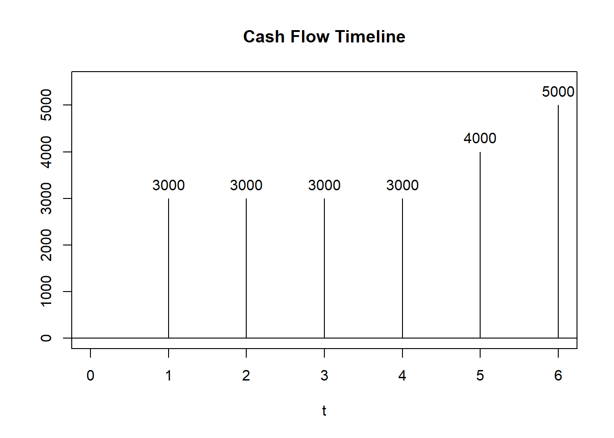
Let the annual interest rate be \(i = 0.0214\).
The discount factor \(v\) is calculated as follows: \[ v = \frac{1}{1+i} \]
What is discount factor?
A discount factor is a number used to calculate the present value of a future amount of money. It shows how much a future sum is worth today, considering a specific interest rate over time.
The discount factors for the time periods \(t = 0\) to \(t = 5\) are given by: \[ v^{(0:5)} = \left(v^0, v^1, v^2, v^3, v^4, v^5\right) \]
The present value (PV) of the cash flows is calculated as the sum of the cash flows multiplied by the corresponding discount factors: \[ \text{PV} = \sum_{t=0}^{5} (\text{cash flow at } t) \times v^t \]
# We have an expense of 3000 from t=0 to t=3, an expense of 4000 at t=4 and 5000 at t=5
# Cash flows
cash_flows <- c(rep(3000,4), 4000, 5000)
# Interest Rate
i <- 0.0214
# Discount factor
v <- 1 / (1+i)
# Discount factors
discount_factors <- v ^ (0:5)
# Present value PV
present_val <- sum(cash_flows * discount_factors)
cat("Present Value (PV):", present_val)## Present Value (PV): 19800.98So you would have to make a deposit of 19800.98 at this current time to cover all of these future payments.
Confidence Interval for Present Value
We can use bootstrapping(?) to estimate the confidence interval for the present value of the cash flows.
# Bootstrapping for confidence interval
set.seed(123)
n_bootstrap <- 1000
bootstrap_pvs <- replicate(n_bootstrap, {
sampled_cash_flows <- sample(cash_flows, replace = TRUE)
sum(sampled_cash_flows * discount_factors)
})
# Calculate 95% confidence interval
ci <- quantile(bootstrap_pvs, c(0.025, 0.975))
cat("95% Confidence Interval for PV:", ci)## 95% Confidence Interval for PV: 17083.1 23714.74Why use confidence interval?
A confidence interval provides a range of values that likely contains the true value of an unknown parameter. It helps us understand the precision of our estimate and gives a measure of uncertainty.
Hypothesis Testing for Present Value
We can perform a hypothesis(?) test to determine if the present value of the cash flows is significantly different from a hypothesized value, say $20,000.
# Hypothesis testing for PV
hypothesized_pv <- 20000
t_stat <- (present_val - hypothesized_pv) / (sd(bootstrap_pvs) / sqrt(length(bootstrap_pvs)))
p_value <- 2 * pt(-abs(t_stat), df = length(bootstrap_pvs) - 1)
cat("T-statistic:", t_stat, "\n")## T-statistic: -3.540303## P-value: 0.0004180939if (p_value < 0.05) {
cat("We reject the null hypothesis that the PV is equal to", hypothesized_pv, "\n")
} else {
cat("We fail to reject the null hypothesis that the PV is equal to", hypothesized_pv, "\n")
}## We reject the null hypothesis that the PV is equal to 20000Why use hypothesis testing?
It helps us decide whether to accept or reject the claim based on sample data, providing a way to make informed decisions in the face of uncertainty.
It is consistent that we would reject our null hypothesis here since we calculated earlier that the PV of the deposit would be 19800.98
Net Present Value (NPV)
What is Net Present value (NPV)?
Net Present Value (NPV) is a financial metric that calculates the value of a series of future cash flows in today’s terms. It takes into account the time value of money by discounting future cash flows back to the present. NPV helps determine the profitability of an investment: a positive NPV indicates a good investment, while a negative NPV suggests it may not be worthwhile.
You’re the head of a lawn mowing company. You want to invest in a new lawn mower than you are confident will generate cash flows of 50 each month for 3 months, followed by 20 for 2 months. The issue is it costs 185 and you’re unsure if it will be a profitable investment. To find out if it is a good investment or not, you must calculate the NPV for this investment. Assume the monthly interest rate is 0.6%.
# Define the cash flows
cash_flows <- c(-185, rep(50, 3), rep(20, 2))
# Discount factors
monthly_interest_rate <- 0.006
discount_factors <- (1 + monthly_interest_rate) ^ -(0:5)
times <- 0:5
plot(times, cash_flows, type="n", xlab="Time (t)", ylab="Cash Flows", main="Cash Flow Timeline", ylim=c(-200, 70))
abline(h = 0)
segments(times, 0, times, cash_flows)
# Add text labels for the cash flows
text(times, cash_flows, labels=cash_flows, pos=ifelse(cash_flows < 0, 1, 3))
axis(1, at=times, labels=times)
axis(2, labels=FALSE)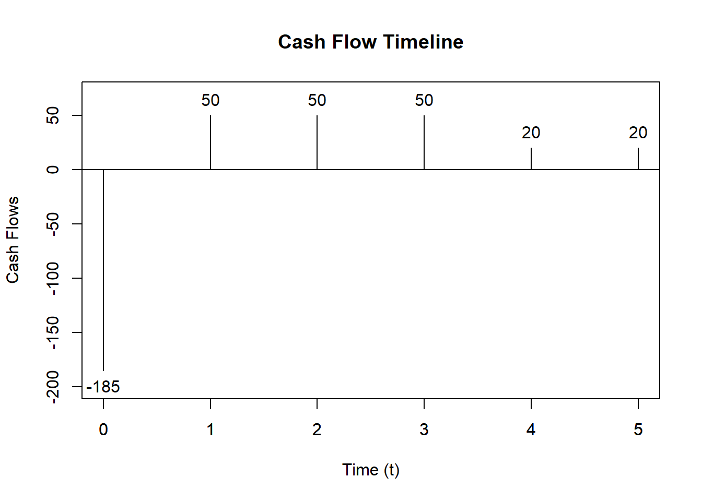
# NPV calculation
npv <- sum(cash_flows * discount_factors)
cat("Net Present Value (NPV):", npv, "\n")## Net Present Value (NPV): 2.155604The Net Present Value (NPV) is calculated using the formula: \[ \text{NPV} = \sum_{t=1}^{n} (\text{cash flow at } t) \times v^t \]
Where:
\( CF_t \) is the cash flow at time \( t \)
\( r \) is the monthly interest rate
\( C_0 \) is the initial investment cost
\( n \) is the number of periods
Given:
Cash flows: \( CF_1 = 50, CF_2 = 50, CF_3 = 50, CF_4 = 20, CF_5 = 20 \)
Initial investment: \( C_0 = 185 \)
Monthly interest rate: \( r = 0.006 \)
# NPV calculation
npv <- sum(cash_flows * discount_factors)
cat("Net Present Value (NPV):", npv, "\n")## Net Present Value (NPV): 2.155604Since our NPV is positive, this indicates that this would be an overall gain ie profit.
To better understand the risk of the investment, we can simulate the cash flows under uncertainty(?). Let’s assume that the cash flows have a certain variability
# Simulation for NPV under uncertainty
set.seed(123)
n_simulations <- 1000
simulated_npvs <- replicate(n_simulations, {
simulated_cash_flows <- cash_flows + rnorm(length(cash_flows), mean = 0, sd = 5)
sum(simulated_cash_flows * discount_factors)
})
# Calculate the mean and standard deviation of simulated NPVs
mean_npv <- mean(simulated_npvs)
sd_npv <- sd(simulated_npvs)
cat("Mean NPV:", mean_npv, "\n")## Mean NPV: 2.310703## Standard Deviation of NPV: 11.42757# Plot the distribution of simulated NPVs
hist(simulated_npvs, breaks = 30, main = "Distribution of Simulated NPVs", xlab = "NPV")
abline(v = mean_npv, col = "red", lwd = 2)
Accumulated Value
What is Accumulated Value (AV)?
The total amount of money accumulated or earned over time from an initial investment or savings, including both the original amount invested (principal) and any interest or earnings gained on it.
Suppose instead of making those expenses, you chose to put them into a savings account. What would be your new present value, assuming same interest rate. What would be your new accumulated value?
## Cash flows: 3000 3000 3000 3000 4000 5000# Define the discount function
discount <- function(s, t, i = 0.0214) {
(1 + i) ^ - (t - s)
}
# Calculate the present value PV
pv <- sum(cash_flows * discount(0, 0:5))
cat("Present Value (PV):", pv)## Present Value (PV): 19800.98# Calculate the value at time 6
av <- sum(cash_flows * discount(6, 0:5))
cat("Accumulated Value (AV):", av)## Accumulated Value (AV): 22483.39# Calculate the value at time 6, starting from the PV
pv_at_6 <- pv * discount(6, 0)
cat("PV at time 6:", pv_at_6)## PV at time 6: 22483.39## Difference: 2682.41As you can see, there would be a difference of $2682.41 if you saved the money instead of spending it.
Sensitivity Analysis of Accumulated Value
To understand how sensitive the accumulated value is to changes in the interest rate, we can perform a sensitivity analysis(?) .
# Sensitivity analysis for different interest rates
interest_rates <- seq(0.01, 0.05, by = 0.005)
accumulated_values <- sapply(interest_rates, function(i) {
discount <- function(s, t) (1 + i) ^ - (t - s)
sum(cash_flows * discount(6, 0:5))
sum(cash_flows * discount(6, 0:5))
})
# Plot the sensitivity analysis
plot(interest_rates, accumulated_values, type = "b",
xlab = "Interest Rate", ylab = "Accumulated Value",
main = "Sensitivity Analysis of Accumulated Value")
abline(v = 0.0214, col = "red", lwd = 2, lty = 2)
## Accumulated Values for different interest rates: 21680.71 22029.21 22383.25 22742.92 23108.29 23479.45 23856.48 24239.48 24628.53Confidence Interval for Accumulated Value
Using bootstrapping to estimate the confidence interval for the accumulated value.
# Bootstrapping for confidence interval of accumulated value
set.seed(123)
n_bootstrap <- 1000
bootstrap_avs <- replicate(n_bootstrap, {
sampled_cash_flows <- sample(cash_flows, replace = TRUE)
sum(sampled_cash_flows * discount(6, 0:5))
})
# Calculate 95% confidence interval
ci_av <- quantile(bootstrap_avs, c(0.025, 0.975))
cat("95% Confidence Interval for AV:", ci_av)## 95% Confidence Interval for AV: 19397.33 26927.34Hypothesis Testing for Accumulated Value
Perform a hypothesis test to determine if the accumulated value is significantly different from a hypothesized value, say $25,000.
# Hypothesis testing for AV
hypothesized_av <- 25000
t_stat_av <- (av - hypothesized_av) / (sd(bootstrap_avs) / sqrt(length(bootstrap_avs)))
p_value_av <- 2 * pt(-abs(t_stat_av), df = length(bootstrap_avs) - 1)
cat("T-statistic for AV:", t_stat_av, "\n")## T-statistic for AV: -39.42543## P-value for AV: 8.702618e-206if (p_value_av < 0.05) {
cat("We reject the null hypothesis that the AV is equal to", hypothesized_av, "\n")
} else {
cat("We fail to reject the null hypothesis that the AV is equal to", hypothesized_av, "\n")
}## We reject the null hypothesis that the AV is equal to 25000Yearly Payments
Your parents want to start saving money for your university costs. Each year of study will set you guys back by about 7500. You’re currently 14 (t=0) and will start attending when you are 19 (t=5). Therefore, your parents will make 1 deposit each year for 4 years (t=1 to t=4). Assume you will attend for 4 years (t=5 to t=22), the constant annual interest rate is 3.14% and each deposit your parents make is equal. Find the amount of the deposit
times <- 0:8
cash_flows <- c(rep(0, 5), rep(-7500, 4))
plot(times, cash_flows, type="n", xlab="Time (t)", ylab="Cash Flows", main="Cash Flow Timeline", ylim=c(-8000, 7000))
abline(h = 0)
segments(times, 0, times, cash_flows)
# Add text labels for the cash flows
text(times, cash_flows, labels=round(cash_flows, 2), pos=ifelse(cash_flows < 0, 1, 3))
axis(1, at=times, labels=times)
axis(2, labels=FALSE)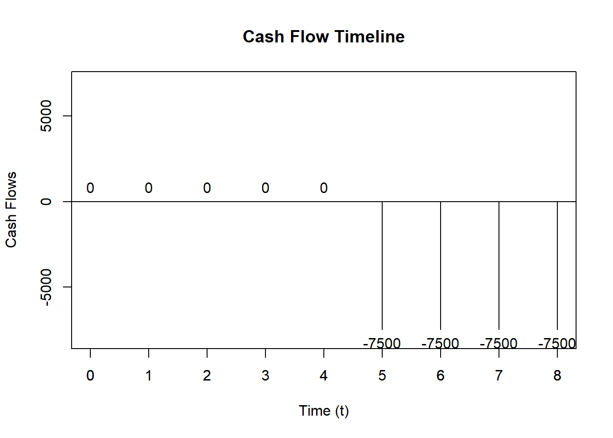
# discount factors
discount_factors <- (1 + 0.0314) ^ - (0:8)
# deposit pattern
deposits <- c(0, rep(1, 4), rep(0, 4))
# university expenses
payments <- c(rep(0, 5), rep(7500, 4))
# Calculate the PV of the deposits
PV_deposit <- sum(deposits * discount_factors)
# Calculate the PV of the payments
PV_payment <- sum(payments * discount_factors)
# Calculate the yearly deposit K in the first 4 years
yearly_deposit <- PV_payment / PV_deposit
cat("Yearly Payments =", yearly_deposit)## Yearly Payments = 6627.546So your parents would have to make a deposit of 6627.546 for each of the 4 years to finance your university.
Varying Interest Rates
You want to take out a loan to open a new restaurant. You plan to take $1000 this year and $3000 next year. You plan to repay the money with equal yearly payments for the 10 years after next year (t=2 to t=11). Note this time the interest rate isn’t constant but changes over time. For the first 3 years it is 4%, then for the next 3 years it is 4.5%, then for the final 5 years it is 6%. How much will your yearly payments be?
cash_flows <- c(-1000, -3000, rep(516.39, 10))
time_periods <- 0:12
# Calculate padding for y-axis
y_padding <- max(abs(cash_flows)) * 0.2
# Create the plot
plot(time_periods, rep(0, length(time_periods)), type = "n",
ylim = c(min(cash_flows) - y_padding, max(cash_flows) + y_padding),
xlim = c(0, 12),
xlab = "t", ylab = "",
main = "Cash Flow Timeline",
xaxt = "n", yaxt = "n")
axis(1, at = time_periods)
for (i in 1:length(cash_flows)) {
lines(c(i-1, i-1), c(0, cash_flows[i]))
if (i <= 2) {
# First two negative cash flows
label <- round(cash_flows[i], 2)
} else if (i == 3 || i == 4 || i == 11 || i == 12) {
# First two and last two positive cash flows
label <- round(cash_flows[i], 2)
} else if (i == 7) {
label <- "..."
} else {
next
}
text(i-1, cash_flows[i], labels = label,
pos = ifelse(cash_flows[i] > 0, 3, 1),
offset = 0.5)
}
# Add horizontal line
abline(h = 0)
# Interest rates
interest <- c(rep(0.04, 3), rep(0.045, 3), rep(0.06, 5))
# Yearly discount factors
yearly_discount_factors <- (1 + interest) ^ (-1)
# Discount factors
discount_factors <- cumprod(c(1, yearly_discount_factors))
# Cash flows for the first two years
cash_flow <- c(1000, 3000)
# Calculate the PV of the loan
PV_loan <- sum(cash_flow * discount_factors[1:2])
# Calculate the PV of the repayments
repayment_years <- 2:11
discount_factors_repayments <- discount_factors[repayment_years + 1]
n_payments <- length(discount_factors_repayments)
yearly_payment <- PV_loan / sum(discount_factors_repayments)
cash_flow_full <- c(cash_flow, rep(-yearly_payment, n_payments))
# Calculate the PV of the repayments to check the balance
PV_repayments <- sum(cash_flow_full * discount_factors)
# Display the yearly payment and the PV balance check
cat("Yearly payments =", yearly_payment)## Yearly payments = 515.2757## PV of repayments = -1.705303e-13cash_flows <- c(-1000, -3000, rep(516.39, 10))
time_periods <- 0:12
# Calculate padding for y-axis
y_padding <- max(abs(cash_flows)) * 0.2
options(repr.plot.width=12, repr.plot.height=6) # Adjust as needed
plot(time_periods, rep(0, length(time_periods)), type = "n",
ylim = c(min(cash_flows) - y_padding, max(cash_flows) + y_padding),
xlim = c(0, 12),
xlab = "t", ylab = "",
main = "Cash Flow Timeline",
xaxt = "n", yaxt = "n")
axis(1, at = time_periods)
for (i in 1:length(cash_flows)) {
lines(c(i-1, i-1), c(0, cash_flows[i]))
if (i <= 2) {
label <- round(cash_flows[i], 2)
} else if (i == 3 || i == 4 || i == 11 || i == 12) {
label <- round(cash_flows[i], 2)
} else if (i == 7) {
label <- "..."
} else {
next
}
text(i-1, cash_flows[i], labels = label,
pos = ifelse(cash_flows[i] > 0, 3, 1),
offset = 0.5)
}
# Add horizontal line
abline(h = 0)
Our PV is ~0, meaning the PV of the future payments and PV of your loans are equal, hence the yearly payments would be 515.2757
Simulation for Yearly Payments Analysis
To assess the variability in yearly payments, we can simulate different interest rate scenarios.
# Simulation for varying interest rates
set.seed(123)
n_simulations <- 1000
simulated_payments <- replicate(n_simulations, {
interest_sim <- c(rep(runif(1, 0.035, 0.045), 3), rep(runif(1, 0.04, 0.05), 3), rep(runif(1, 0.055, 0.065), 5))
yearly_discount_factors_sim <- (1 + interest_sim) ^ (-1)
discount_factors_sim <- cumprod(c(1, yearly_discount_factors_sim))
PV_loan_sim <- sum(cash_flow * discount_factors_sim[1:2])
repayment_years_sim <- 2:11
discount_factors_repayments_sim <- discount_factors_sim[repayment_years_sim + 1]
yearly_payment_sim <- PV_loan_sim / sum(discount_factors_repayments_sim)
return(yearly_payment_sim)
})
# Calculate the mean and standard deviation of simulated yearly payments
mean_payment <- mean(simulated_payments)
sd_payment <- sd(simulated_payments)
cat("Mean Yearly Payment:", mean_payment, "\n")## Mean Yearly Payment: 515.2269## Standard Deviation of Yearly Payment: 4.438351# Plot the distribution of simulated yearly payments
hist(simulated_payments, breaks = 30, main = "Distribution of Simulated Yearly Payments", xlab = "Yearly Payment")
abline(v = mean_payment, col = "red", lwd = 2)
Yearly to Monthly Interest Rate
You plan to take out a 100,000 loan with a yearly interest rate of 2.88%. You want to pay back this loan with fixed monthly payments over the next 15 years. Find how much these monthly payments will be.
#number of payments
number_payments <- 12*15
#yearly interest rate
i <- 0.0288
#monthly interest rate
monthly_interest <- (1+i)^(1/12)-1
discount_factors <- (1 + monthly_interest) ^ - (1:number_payments)
payments <- rep(1, number_payments)
# Calculate the monthly loan payment K
K <- 100000 / sum(payments * discount_factors)
cat("Monthly loan payments =", K)## Monthly loan payments = 683.0401These monthly payments will be 683.0401
Confidence Interval for Monthly Payments
Using bootstrapping to estimate the confidence interval for the monthly payments.
# Bootstrapping for confidence interval of monthly payments
set.seed(123)
bootstrap_payments <- replicate(n_bootstrap, {
sampled_payments <- payments + rnorm(length(payments), mean = 0, sd = 10)
K_sim <- 100000 / sum(sampled_payments * discount_factors)
return(K_sim)
})
# Calculate 95% confidence interval
ci_payments <- quantile(bootstrap_payments, c(0.025, 0.975))
cat("95% Confidence Interval for Monthly Payments:", ci_payments)## 95% Confidence Interval for Monthly Payments: -3081.038 5632.07Hypothesis Testing for Monthly Payments
Perform a hypothesis test to determine if the monthly payment is significantly different from a hypothesized value, say $700.
# Hypothesis testing for monthly payments
hypothesized_payment <- 700
t_stat_payment <- (K - hypothesized_payment) / (sd(bootstrap_payments) / sqrt(length(bootstrap_payments)))
p_value_payment <- 2 * pt(-abs(t_stat_payment), df = length(bootstrap_payments) - 1)
cat("T-statistic for Monthly Payment:", t_stat_payment, "\n")## T-statistic for Monthly Payment: -0.02880914## P-value for Monthly Payment: 0.9770226if (p_value_payment < 0.05) {
cat("We reject the null hypothesis that the monthly payment is equal to", hypothesized_payment, "\n")
} else {
cat("We fail to reject the null hypothesis that the monthly payment is equal to", hypothesized_payment, "\n")
}## We fail to reject the null hypothesis that the monthly payment is equal to 700Life Tables
What are Life Tables?
Life tables are statistical tools used in demography and actuarial science to analyze mortality rates and life expectancy within a population. They provide a detailed breakdown of how long people are expected to live, based on age-specific mortality rates. Life tables tell us about the probability of surviving to different ages, expected years of life remaining at various ages, and are crucial for understanding population dynamics, healthcare planning, and insurance risk assessment.In data analysis beyond actuarial science, life tables serve as a model for understanding survival or retention rates in various contexts. For instance, in customer analytics, they can help predict how long customers are likely to remain active or how likely they are to churn based on historical data. Similarly, in medical research, life tables can be adapted to study survival rates after treatments or interventions. Essentially, life tables provide a structured way to analyze and predict durations or outcomes based on observed data, making them versatile tools across different fields of data analysis.
Import the life tables from mortality.org. We are going to import the dataset of Canada from 1921 - 2021.
life_table <- read.table("C:\\Users\\megacrazyleo\\Desktop\\SQL\\R\\bltper_1x1.txt", header=FALSE, skip = 3, sep = "")
colnames(life_table) <- c("Year", "Age", "mx", "qx", "ax", "lx", "dx", "Lx", "Tx", "ex")Setting up variables
year <- life_table$Year
age <- life_table$Age
qx <- life_table$qx
mx <- life_table$mx
ax <- life_table$ax
lx <- life_table$lx
dx <- life_table$dx
Lx <- life_table$Lx
Tx <- life_table$Tx
ex <- life_table$ex
px <- 1 - qx| Variable | Description |
|---|---|
| Year | Year or range of years (for period and cohort data) |
| Age | Age group, representing an n-year interval from exact age x to just before x + n, where n = 1, 4, 5, or infinity |
| m(x) | Central death rate between ages x and x + n |
| q(x) | Probability of death between ages x and x + n |
| a(x) | Average length of survival between ages x and x + n for persons dying in the interval |
| l(x) | Number of survivors at exact age x, assuming l(0) = 100,000 |
| d(x) | Number of deaths between ages x and x + n |
| L(x) | Number of person-years lived between ages x and x + n |
| T(x) | Number of person-years remaining after exact age x |
| e(x) | Life expectancy at exact age x (in years) |
Mortality Rates
Plotting the mortality rates from 1921 to 2021 for all ages
# Setting up the plot
par(xpd = TRUE, mar = c(5, 4, 4, 6) + 0.1)
convert_age <- function(x) {
x[x == "110+"] <- "110" # Here age is character in our dataset, need to change to numeric so that we don't run into issues with character
suppressWarnings({
as.numeric(x)
})
}
age <- convert_age(age)
years <- unique(year)
color_palette <- colorRampPalette(c("blue", "green", "yellow", "red"))(length(years))
plot2 <- plot(NULL,
xlim = range(age, na.rm = TRUE),
ylim = range(qx, na.rm = TRUE),
main = "Mortality rates (Canada, Males & Females, 1921-2021)",
xlab = "Age x",
ylab = expression(paste("Mortality rate ", q[x])),
type = "l"
)
suppressWarnings({
for (i in seq_along(years)) {
year_data <- subset(life_table, Year == years[i])
lines(year_data$Age, year_data$qx, col = color_palette[i], type = "l")
}
})
legend("topright", inset = c(-0.2,0),
legend = c("1921", "1955", "1988", "2021"),
col = color_palette[c(1, which.min(abs(years - 1955)),
which.min(abs(years - 1988)), length(years))],
lty = 1,
title = "Year")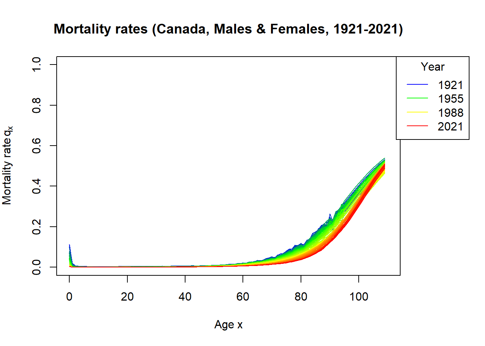
We can see that mortality rates from recent years are much lower compared to the earliest years.
####Hypothesis Testing on Mortality Rates
We can perform a hypothesis test to determine if the mortality rate at age 50 has significantly changed between 1921 and 2021.
# Hypothesis testing for mortality rates at age 50
mort_1921 <- subset(life_table, Year == 1921 & Age == 50)$qx
mort_2021 <- subset(life_table, Year == 2021 & Age == 50)$qx
t_stat <- (mort_2021 - mort_1921) / sqrt((mort_1921 / lx[51]) + (mort_2021 / lx[51]))
p_value <- 2 * pt(-abs(t_stat), df = lx[51] - 1)
cat("T-statistic:", t_stat, "\n")## T-statistic: -17.2664## P-value: 1.158051e-66if (p_value < 0.05) {
cat("We reject the null hypothesis that the mortality rate at age 50 has not changed between 1921 and 2021\n")
} else {
cat("We fail to reject the null hypothesis that the mortality rate at age 50 has not changed between 1921 and 2021\n")
}## We reject the null hypothesis that the mortality rate at age 50 has not changed between 1921 and 2021Life Expectancy
Plotting the life expectancy of males and females from Canada from the years 1921 - 2021
par(xpd = TRUE, mar = c(5, 4, 4, 6) + 0.1)
years <- unique(year)
color_palette <- colorRampPalette(c("blue", "green", "yellow", "red"))(length(years))
plot3 <- suppressWarnings({
plot(NULL,
xlim = range(age, na.rm = TRUE),
ylim = range(ex, na.rm = TRUE),
main = "Life Expectancy (Canada, Males & Females, 1921-2021)",
xlab = "Age x",
ylab = expression(paste("Life Expectancy ", e[x])),
type = "l"
)
})
suppressWarnings({
for (i in seq_along(years)) {
year_data <- subset(life_table, Year == years[i])
lines(year_data$Age, year_data$ex, col = color_palette[i], type = "l")
}
})
legend("topright", inset = c(-0.2, 0),
legend = c("1921", "1955", "1988", "2021"),
col = color_palette[c(1, which.min(abs(years - 1955)),
which.min(abs(years - 1988)), length(years))],
lty = 1,
title = "Year")
As we can see, the life expectancy is much higher from the years ~ 2021 as opposed to the years from ~1921 or even ~1955. Note for the early years, the life expectancy starts extremely low at age 0 and after a couple years, has a sharp increase. This can be explained mainly because it was much more difficult for an infant to survive the initial years. In later years, thanks to modern medicine, the survival rate of infants have risen much higher.
Confidence Interval for Life Expectancy
Using bootstrapping to estimate the confidence interval for life expectancy at age 0 in 2021.
# Bootstrapping for confidence interval of life expectancy
set.seed(123)
n_bootstrap <- 1000
bootstrap_ex <- replicate(n_bootstrap, {
sampled_ex <- sample(ex[age == 0], replace = TRUE)
mean(sampled_ex)
})
# Calculate 95% confidence interval
ci_ex <- quantile(bootstrap_ex, c(0.025, 0.975))
cat("95% Confidence Interval for Life Expectancy at age 0 in 2021:", ci_ex)## 95% Confidence Interval for Life Expectancy at age 0 in 2021: 70.54005 73.39801Let us focus on the year 2021.
2021 Life Table
life_table <- life_table[year == 2021, ] #Getting only data from the year 2021
year <- life_table$Year
age <- life_table$Age
qx <- life_table$qx
mx <- life_table$mx
ax <- life_table$ax
lx <- life_table$lx
dx <- life_table$dx
Lx <- life_table$Lx
Tx <- life_table$Tx
ex <- life_table$ex
px <- 1 - qxlife_table_2021 <- life_table[year == 2021, ] #Getting only data from the year 2021
year <- life_table_2021$Year
age <- life_table_2021$Age
qx <- life_table_2021$qx
mx <- life_table_2021$mx
ax <- life_table_2021$ax
lx <- life_table_2021$lx
dx <- life_table_2021$dx
Lx <- life_table_2021$Lx
Tx <- life_table_2021$Tx
ex <- life_table_2021$ex
px <- 1 - qxProbability an individual of age X dies before age Y, future life of age X
Finding the probability that an 23 year old dies before turning 24
## qx = 0.00072As we can see, it is a very low probability, < 0.098%
The expected future lifetime of an 23 year old
## ex = 59.34It is expected that an average 23 year old from Canada will live for 59.34 more years in Canada in 2021
Plotting mortality rates
Plot the mortality rates in the year 2021
suppressWarnings({
plot(age, qx,
main = "Mortality rates (Canada, 2021)",
xlab = "Age x",
ylab = expression(paste("Mortality rate ", q[x])),
type = "l")
})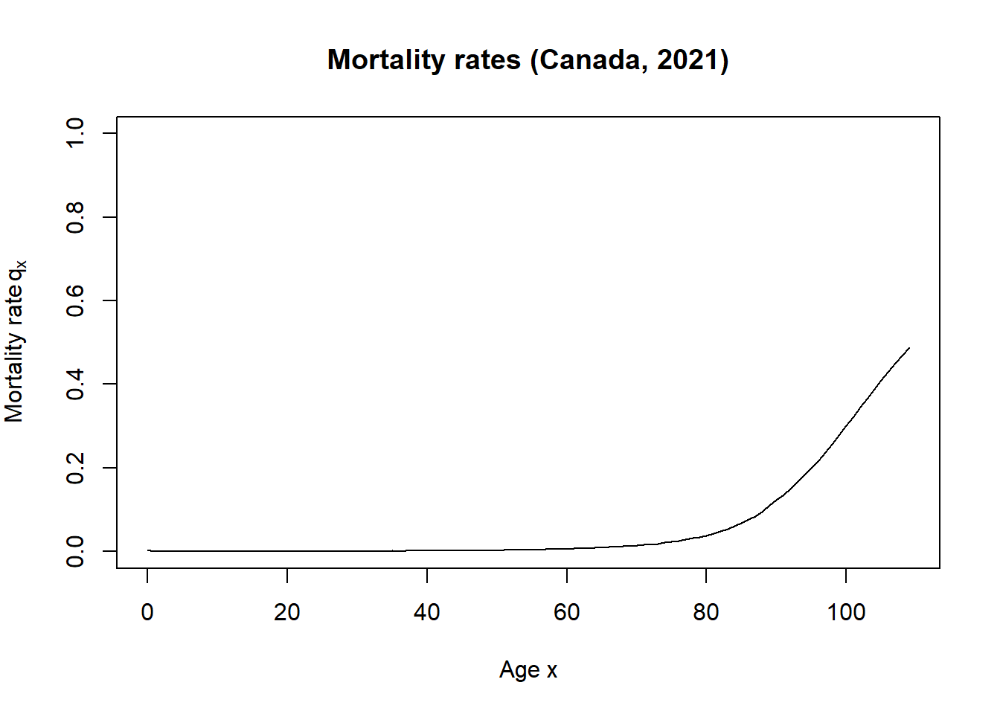
Plot the logarithm of the mortality rates in the year 2021
suppressWarnings({
plot(age, log(qx),
main = "Log mortality rates (Canada, 2021)",
xlab = "Age x",
ylab = expression(paste("Log mortality rate ", log(q[x]))),
type = "l")
})
Plot the mortality rates of females vs males in the year 2021
We need to import the male and female datasets here
#male data
life_table_m <- read.table("C:\\Users\\megacrazyleo\\Desktop\\SQL\\R\\mltper_1x1.txt", header=FALSE, skip = 3, sep = "")
colnames(life_table_m) <- c("Year", "Age", "mx", "qx", "ax", "lx", "dx", "Lx", "Tx", "ex")
male_2021 <- life_table_m[life_table_m$Year == 2021, ]
year_m <- male_2021$Year
age_m <- male_2021$Age
qx_m <- male_2021$qx
mx_m <- male_2021$mx
ax_m <- male_2021$ax
lx_m <- male_2021$lx
dx_m <- male_2021$dx
Lx_m <- male_2021$Lx
Tx_m <- male_2021$Tx
ex_m <- male_2021$ex
#female data
life_table_f <- read.table("C:\\Users\\megacrazyleo\\Desktop\\SQL\\R\\fltper_1x1.txt", header=FALSE, skip = 3, sep = "")
colnames(life_table_f) <- c("Year", "Age", "mx", "qx", "ax", "lx", "dx", "Lx", "Tx", "ex")
female_2021 <- life_table_f[life_table_f$Year == 2021, ]
year_f <- female_2021$Year
age_f <- female_2021$Age
qx_f <- female_2021$qx
mx_f <- female_2021$mx
ax_f <- female_2021$ax
lx_f <- female_2021$lx
dx_f <- female_2021$dx
Lx_f <- female_2021$Lx
Tx_f <- female_2021$Tx
ex_f <- female_2021$exPlot male vs female mortality rates in the year 2021
suppressWarnings({
plot(age_m, qx_m,
main = "Mortality rates (Canada, 2021)",
xlab = "Age x",
ylab = expression(paste("Mortality rate ", q[x])),
type = "l",
col = "blue",
)
# Add the female line to the same plot
lines(age_f, qx_f, col = "red")
legend("bottomright",
legend = c("Male", "Female"),
col = c("blue", "red"),
lty = 1,
cex = 0.8)
})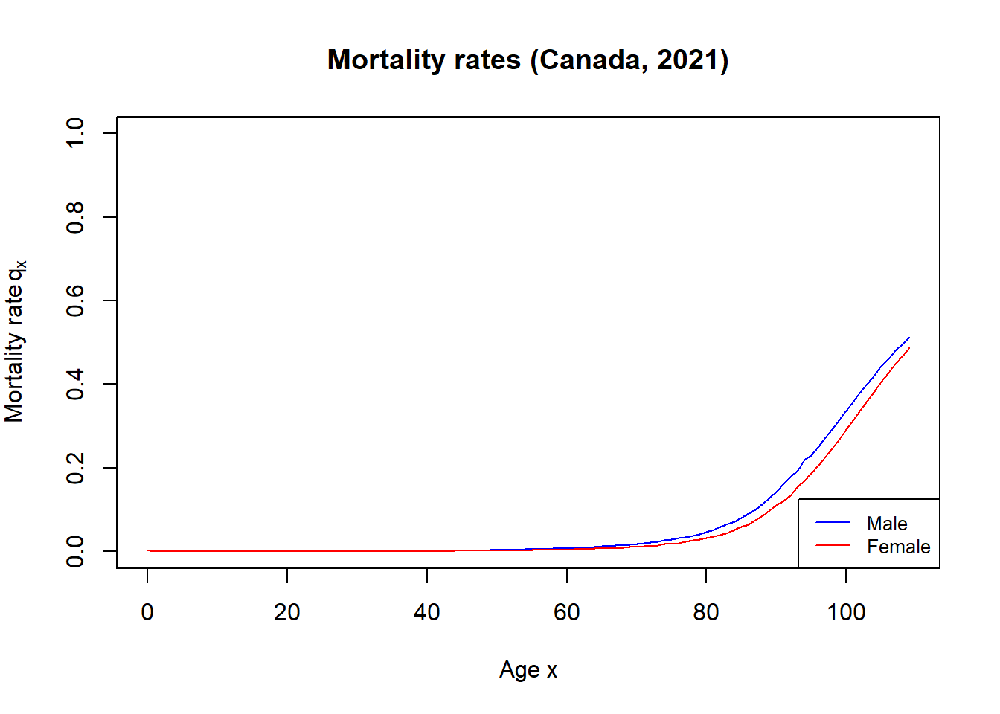
suppressWarnings({
plot(age_m, qx_m,
main = "Mortality rates (Canadian Males and Females, 2021)",
xlab = "Age x",
ylab = expression(paste("Mortality rate ", q[x])),
type = "l",
col = "blue",
log = "y",
ylim = range(c(qx_m, qx_f))
)
lines(age_f, qx_f, col = "red")
grid()
points(age_m, qx_m, pch = 20, cex = 0.5, col = "blue")
points(age_f, qx_f, pch = 20, cex = 0.5, col = "red")
legend("bottomright",
legend = c("Males", "Females"),
col = c("blue", "red"),
lty = 1,
pch = 20,
cex = 0.8)
})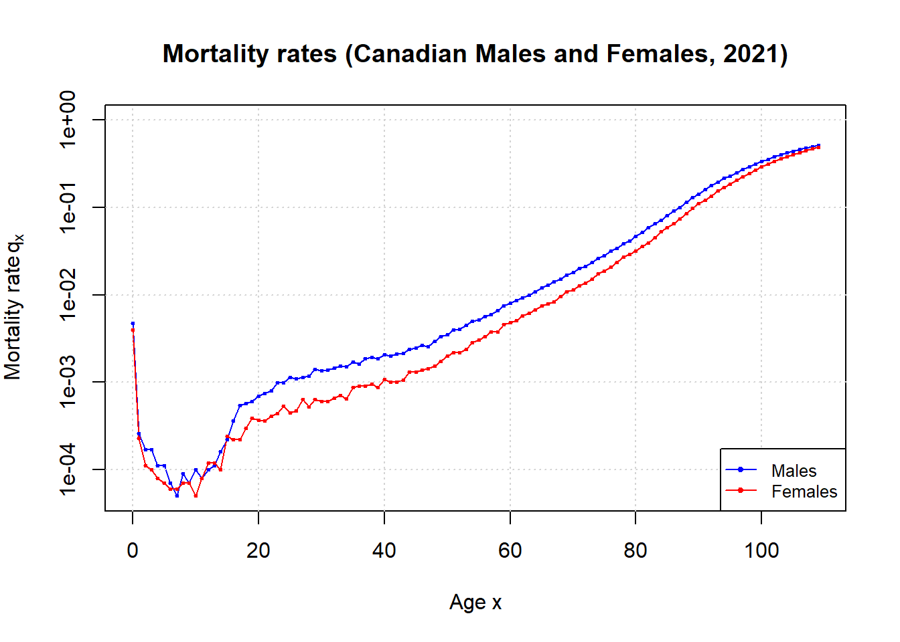
As we can see, females on average for every age have a lower mortality rate than males. The gap only begins to narrow at the later ages, where it eventually becomes near equal around the age of 100. While there could be multiple reasons for this disparity, a study from Harvard states that one of the reasons could be because men have lower estrogen levels, hence they are more likely to die of heart disease
Probability for invidivual of age x to reach age y
Find the probability for a 0 year old female and male in Canada to reach the age of 100 in 2021
## [1] "Male probability: 0.01918"## [1] "Female probability: 0.05113"Find the probability for a 0 year old in Canada to reach the age of 100 in 2021
## [1] "M/F probability: 0.03606"If we compare this with an 18 year old individual
## [1] "M/F age 18 probability: 0.0363050591492575"Vs a 40 year old individual
## [1] "M/F age 40 probability: 0.0370583520029597"And again with a 75 year old individual
## [1] "M/F age 75 probability: 0.0473352585980572"Finally, compare with a 98 year old individual
## [1] "M/F age 98 probability: 0.534459759893286"ages <- c(0, 18, 75, 98)
probs <- c(
lx[100 + 1] / lx[0 + 1],
lx[100 + 1] / lx[18 + 1],
lx[100 + 1] / lx[40 + 1],
lx[100 + 1] / lx[75 + 1],
lx[100 + 1] / lx[98 + 1]
)
prob_data <- data.frame(Age = c("0", "18", "40", "75", "98"), Probability = probs)
barplot(prob_data$Probability,
names.arg = prob_data$Age,
main = "Probability of Reaching Age 100 from Different Starting Ages",
xlab = "Starting Age",
ylab = "Probability",
col = "skyblue",
ylim = c(0, max(probs) * 1.1))
text(x = 1:5,
y = probs,
labels = round(probs, 5),
pos = 3,
cex = 0.8)
grid()
Plot the survival probabilties for (18) up to age 100
k <- 0:82
plot(k, lx[18 + k + 1] / lx[18 + 1],
pch = 20,
xlab = "k",
ylab = expression(paste(""[k], "p"[18])),
main = "Survival probabilities for age 18 up to 100")
Compare this with a 50 year old
k <- 0:100
plot(k, lx[50 + k + 1] / lx[50 + 1],
pch = 20,
xlab = "k",
ylab = expression(paste(""[k], "p"[50])),
main = "Survival probabilities for age 50 up to 100")
Plot the number of deaths
suppressWarnings({
plot(age, dx,
type = "h",
pch = 20,
xlab = "Age x",
ylab = expression("d"[x]),
main = "Number of deaths (Canada, M/F, 2021)")
sims <- rbinom(n = length(lx), size = lx, prob = qx)
points(age, sims,
pch = 4,
col = "red")
})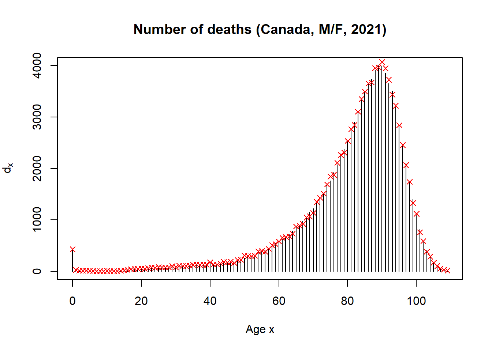
Probability that individual of age x survives y more years
Calculate the probability that (25) survives 5 more years
Explanation
px Calculation:
px typically represents the
survival probability (1 - qx) at each age x. In this context, it’s
assumed to be a sequence or vector containing survival probabilities for
each age from 25 onwards.
Subset of px:
px[(25 + 1):(30 + 1)] selects a
subset of px starting from age 26 (25 + 1) to age 31 (30 + 1). This
corresponds to the ages from 26 to 30, inclusive.
Product Calculation:
prod(px[(25 + 1):(30 + 1)])
calculates the product of the survival probabilities for the selected
ages. This multiplication represents the joint probability that a
25-year-old individual survives consecutively from age 25 to age 30 (5
years in total).
cat(“Prob that a 25 year old survives for 5 more years =”, value1) prints the result to the console in a human-readable format. It displays the calculated probability that a 25-year-old individual survives for exactly 5 more years based on the provided survival probabilities.
value1 <- prod(px[(25 + 1):(30 + 1)])
cat("Prob that a 25 year old survives for 5 more years =", value1)## Prob that a 25 year old survives for 5 more years = 0.9946519How to interpret these results:
At age 25, our survival probability is very high, close to 100% ie nearly all individuals who are 25 years old are expected to survive to the next age, 26. As the individual ages, the survival probabilities gradually decrease. For example, at age 30, the survival probability might be around 0.994, indicating that about 99.4% of individuals who reached age 30 are expected to survive to age 31.
By age 50, the survival probability decreases further, reflecting the increased likelihood of mortality as people grow older. For instance, a survival probability of 0.874 at age 50 means that approximately 87.4% of individuals who reach age 50 are expected to survive to age 51.
Towards older ages, such as age 70 and beyond, the survival probabilities continue to decline more steeply. This reflects the increasing vulnerability to health risks and mortality associated with advanced age.
Compute the survival probabilities of (25) until the age of 100
Explanation
Survival Probability (px):
px is a vector where
each element represents the probability of survival (1 - qx) at a
specific age x. It starts from age 25 and continues for subsequent
ages.
Subset of Survival Probabilities (px[(25 + 1):(99 +
1)]):
This selects a subset of px starting from age 26 (25
+ 1) to age 100 (99 + 1). These are the survival probabilities
considered for each age from 25 to 100.
cumprod calculates the cumulative product of the selected survival probabilities. It computes the joint probability that a 25-year-old individual survives consecutively from age 25 up to age 100. Each value in kpx represents the accumulated survival probability up to each respective age.
## Survival prob's of a 25 year old until 100 = 0.9992 0.9984006 0.9975121 0.9966542 0.9956276 0.9946519 0.9936573 0.992604 0.9914824 0.9904016 0.9891141 0.987858 0.9864947 0.9850742 0.9837443 0.9821998 0.9807265 0.9792162 0.9776593 0.9758506 0.9740257 0.972068 0.970153 0.9679798 0.9655212 0.962866 0.9599004 0.9569247 0.9536616 0.9499041 0.945981 0.9417336 0.9371285 0.932246 0.9266619 0.9206942 0.9143782 0.9075387 0.9002874 0.8924099 0.8837089 0.8745449 0.8647237 0.8540703 0.842361 0.8300204 0.8165907 0.8025617 0.7872889 0.7701418 0.7523361 0.7328732 0.711913 0.6888043 0.6647788 0.6390851 0.611336 0.5820286 0.5505234 0.5169249 0.4817068 0.4448996 0.407141 0.3675954 0.3271856 0.2868076 0.2478965 0.2109524 0.1754449 0.1430666 0.1145033 0.08950153 0.06820643 0.05058803 0.03645575How to interpret these results:
The output kpx provides a sequence of survival probabilities for each age from 25 to 100. For example, if kpx[1] is 0.9992, it means there’s a 99.92% chance that a 25-year-old individual will survive until age 26. Similarly, kpx[2] (0.9984006) represents the probability of surviving from age 25 to age 27, and so on.
Extract the probability that (25) survives until the age of 100
## Prob that a 25 year old survives until 100: 0.03645575Plot the probabilties for (25) to reach the age of 26, 27, …, 100
plot(1:length(kpx), kpx,
pch = 20,
xlab = "k",
ylab = expression(paste(""[k], "p"[25])),
main = "Survival probabilities for (25)")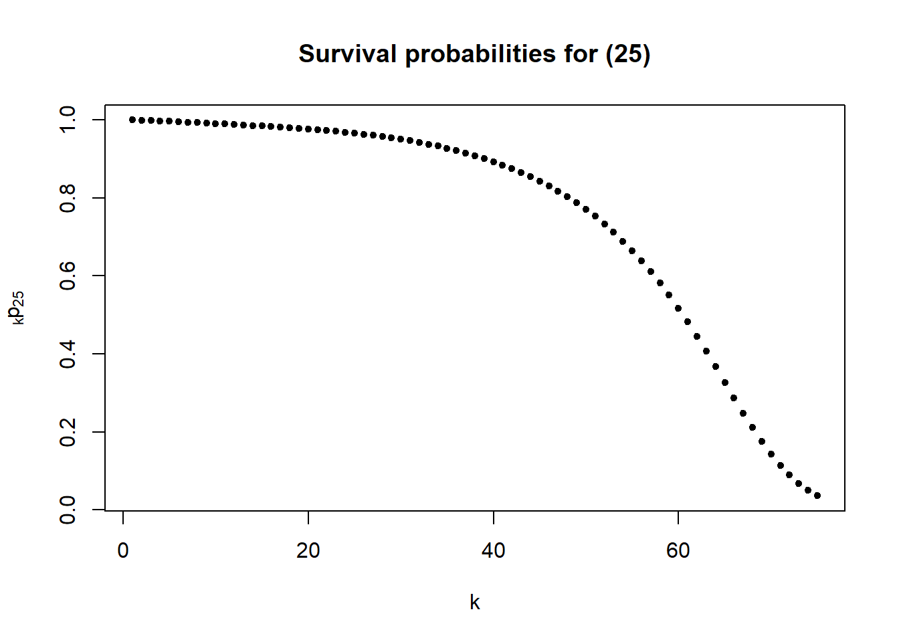
Survival Probabilities and Curtate Expected Future Lifetime
What is Curtate Expected Future Lifetime?
Curtate expected future lifetime is a statistical measure used in actuarial science and life insurance. It represents the expected number of whole years a person, starting at a given age, is expected to live into the future. This measure is calculated by considering the probability of surviving each year from the current age until the individual’s death. Curtate expected future lifetime provides valuable insights into life expectancy and is crucial for determining insurance premiums and retirement planning.
Compute the survival probabilities of (25)
## Survival prob's of a 25 year old: 1 0.9992 0.9984006 0.9975121 0.9966542 0.9956276 0.9946519 0.9936573 0.992604 0.9914824 0.9904016 0.9891141 0.987858 0.9864947 0.9850742 0.9837443 0.9821998 0.9807265 0.9792162 0.9776593 0.9758506 0.9740257 0.972068 0.970153 0.9679798 0.9655212 0.962866 0.9599004 0.9569247 0.9536616 0.9499041 0.945981 0.9417336 0.9371285 0.932246 0.9266619 0.9206942 0.9143782 0.9075387 0.9002874 0.8924099 0.8837089 0.8745449 0.8647237 0.8540703 0.842361 0.8300204 0.8165907 0.8025617 0.7872889 0.7701418 0.7523361 0.7328732 0.711913 0.6888043 0.6647788 0.6390851 0.611336 0.5820286 0.5505234 0.5169249 0.4817068 0.4448996 0.407141 0.3675954 0.3271856 0.2868076 0.2478965 0.2109524 0.1754449 0.1430666 0.1145033 0.08950153 0.06820643 0.05058803 0.03645575 0.02548512 0.01725751 0.0113047 0.007155764 0.004373102 0.002578643 0.001466681 0.000804665 0.0004259575 0.0002176983Compute the deferred mortality probabilities of (25)
Explanation
Deferred Mortality Probabilities of a
25-Year-Old:
The kqx values calculated
represent the adjusted probabilities of dying at each age from 26
onwards, starting from age 25. Here’s how this calculation
works:
Original Survival Probabilities
(kpx):
kpx is a sequence of
probabilities that a 25-year-old individual will survive from age 25 up
to each subsequent age. It starts with a probability of 1 (indicating
certainty of survival at age 25) and adjusts slightly with each
subsequent age.
Adjusted for Mortality Rate (qx):
qx represents the mortality rate at each age. It’s the
probability of dying within the next year at a given age. Multiplying
kpx by qx adjusts the survival probabilities
to reflect the increasing risk of mortality as individuals
age.
Interpreting kqx:
Each value in
kqx shows the adjusted probability that a 25-year-old
individual will survive to each subsequent age, considering the
mortality rate specific to that age. For example, kqx[1]
(0.9992) indicates the probability of surviving from age 25 to age 26,
adjusted for mortality at age 26. Similarly, kqx[2]
(0.9984006) represents the adjusted survival probability from age 25 to
age 27, and so on.
## Deferred mortality prob's of a 25 year old: 1 0.9992 0.9984006 0.9975121 0.9966542 0.9956276 0.9946519 0.9936573 0.992604 0.9914824 0.9904016 0.9891141 0.987858 0.9864947 0.9850742 0.9837443 0.9821998 0.9807265 0.9792162 0.9776593 0.9758506 0.9740257 0.972068 0.970153 0.9679798 0.9655212 0.962866 0.9599004 0.9569247 0.9536616 0.9499041 0.945981 0.9417336 0.9371285 0.932246 0.9266619 0.9206942 0.9143782 0.9075387 0.9002874 0.8924099 0.8837089 0.8745449 0.8647237 0.8540703 0.842361 0.8300204 0.8165907 0.8025617 0.7872889 0.7701418 0.7523361 0.7328732 0.711913 0.6888043 0.6647788 0.6390851 0.611336 0.5820286 0.5505234 0.5169249 0.4817068 0.4448996 0.407141 0.3675954 0.3271856 0.2868076 0.2478965 0.2109524 0.1754449 0.1430666 0.1145033 0.08950153 0.06820643 0.05058803 0.03645575 0.02548512 0.01725751 0.0113047 0.007155764 0.004373102 0.002578643 0.001466681 0.000804665 0.0004259575 0.0002176983Why Use Deferred Mortality Probabilities?
Risk Assessment: Deferred mortality probabilities
provide a more accurate assessment of mortality risk over time. By
adjusting survival probabilities with age-specific mortality rates
(qx), they reflect the increasing likelihood of death as
individuals age.
Product Design: Insurance companies and pension
funds use deferred mortality probabilities to design products such as
life insurance policies and annuities. These products rely on accurate
estimates of how mortality risk changes with age to determine premiums
and payouts.
Financial Planning: Individuals and institutions use
deferred mortality probabilities for retirement planning and financial
forecasting. They help in estimating life expectancies and determining
the financial resources needed for retirement based on expected future
lifetimes.
Actuarial Calculations: Actuaries use deferred
mortality probabilities in complex calculations such as pension fund
valuations, reserve calculations, and risk assessments. These
calculations ensure that financial institutions have adequate reserves
to cover future obligations.
Long-Term Commitments: Many financial products, such
as pensions and annuities, involve long-term commitments spanning
several decades. Deferred mortality probabilities provide insights into
how mortality risk impacts these long-term financial
commitments.
Plot the deferred mortality probabilities of (25)
plot(0:(length(kqx) - 1), kqx,
pch = 20,
xlab = "k",
ylab = expression(paste(""['k|'], "q"[25])),
main = "Deferred mortality probabilities of (25)")
Survival probabilities and curtate expected future lifetime of (0)
## Survival prob's of a 0 year old 0.99563 0.995391 0.9952517 0.9951223 0.9950328 0.9949432 0.9948835 0.9948238 0.9947442 0.9946746 0.994595 0.9945154 0.9944061 0.9942867 0.9941575 0.9939288 0.9936406 0.993263 0.992826 0.9923295 0.9917937 0.9912383 0.9906336 0.9899204 0.989168 0.9883767 0.987586 0.986707 0.9858585 0.984843 0.9838779 0.982894 0.9818521 0.9807427 0.9796736 0.9784001 0.9771575 0.975809 0.9744039 0.9730884 0.9715607 0.9701033 0.9686094 0.9670693 0.9652802 0.9634751 0.9615385 0.9596443 0.9574947 0.9550627 0.9524362 0.9495027 0.9465593 0.9433315 0.9396148 0.9357342 0.9315327 0.9269775 0.922148 0.9166243 0.9107213 0.9044737 0.8977082 0.8905356 0.8827434 0.8741366 0.8650718 0.8553571 0.8448191 0.8332366 0.8210297 0.8077454 0.7938684 0.778761 0.7617996 0.7441868 0.7249347 0.7042016 0.6813432 0.6575779 0.6321626 0.6047141 0.5757241 0.5445601 0.5113256 0.476489 0.4400805 0.4027308 0.3636136 0.3236416 0.283701 0.2452112 0.2086674 0.1735445 0.1415169 0.113263 0.08853205 0.06746762 0.05004006 0.03606087 0.02520907 0.01707057 0.01118225 0.007078253 0.004325732 0.002550711 0.001450794 0.0007959489 0.0004213435 0.0002153402 0## Curtate expected future lifetime of a 0 year old 81.15437Survival probabilities and curtate expected future lifetime of a 25 year old
## Survival prob's of a 25 year old 0.9992 0.9984006 0.9975121 0.9966542 0.9956276 0.9946519 0.9936573 0.992604 0.9914824 0.9904016 0.9891141 0.987858 0.9864947 0.9850742 0.9837443 0.9821998 0.9807265 0.9792162 0.9776593 0.9758506 0.9740257 0.972068 0.970153 0.9679798 0.9655212 0.962866 0.9599004 0.9569247 0.9536616 0.9499041 0.945981 0.9417336 0.9371285 0.932246 0.9266619 0.9206942 0.9143782 0.9075387 0.9002874 0.8924099 0.8837089 0.8745449 0.8647237 0.8540703 0.842361 0.8300204 0.8165907 0.8025617 0.7872889 0.7701418 0.7523361 0.7328732 0.711913 0.6888043 0.6647788 0.6390851 0.611336 0.5820286 0.5505234 0.5169249 0.4817068 0.4448996 0.407141 0.3675954 0.3271856 0.2868076 0.2478965 0.2109524 0.1754449 0.1430666 0.1145033 0.08950153 0.06820643 0.05058803 0.03645575 0.02548512 0.01725751 0.0113047 0.007155764 0.004373102 0.002578643 0.001466681 0.000804665 0.0004259575 0.0002176983 0## Curtate expected future lifetime of a 25 year old 56.92983Complete expected future lifetime of (0) and (25)
## Expected future lifetime of a 0 and 25 year old 81.65 57.43Function to compute the curtate expected future lifetime for a given age and life table
Explanation: Computing Curtate Expected Future Lifetime
Function Purpose: The function
curtate_future_lifetime calculates the curtate expected
future lifetime for a given starting age using a life table
dataset.
Inputs:
age2: Represents the starting age for which we want to compute the curtate expected future lifetime.life_table: Contains mortality data including qx (probability of dying between ages x and x+1) needed for calculations.
Steps:
- qx Calculation: Extracts qx values from the
life_table. qx represents the probability of dying between ages x and x+1. - px Calculation: Computes px as 1 - qx, which
represents the probability of survival between ages x and x+1.
- Subset and Cumulative Product: Selects and computes
the cumulative product of px values starting from
age2 + 1to the end of the dataset. This sequence represents the joint probability of surviving each subsequent year afterage2. - Summation: Sums up the cumulative product
(
kpx) to obtain the curtate expected future lifetime, which represents the expected number of full years an individual agedage2is expected to live from that age.
Output: The function returns the computed curtate expected future lifetime as a numeric value.
This function is crucial in actuarial science and insurance for estimating life expectancies and making financial projections based on mortality data.
suppressWarnings({
curtate_future_lifetime <- function(age2, life_table) {
qx <- life_table$qx
px <- 1 - qx
kpx <- cumprod(px[(age2 + 1):length(px)])
sum(kpx)
}
})Curtate future lifetimes for all ages
valid_ages <- age2[!is.na(age2)]
future_lifetimes <- sapply(valid_ages, function(age) curtate_future_lifetime(age, life_table))
cat("Future lifetimes for all ages:", future_lifetimes)## Future lifetimes for all ages: 81.15437 80.51057 79.5299 78.54103 77.55124 76.55822 75.56511 74.56965 73.57412 72.58001 71.58509 70.59082 69.59647 68.60412 67.61236 66.62115 65.63647 64.65551 63.68009 62.70812 61.73949 60.77285 59.8069 58.84341 57.8858 56.92983 55.97541 55.02023 54.06924 53.11578 52.17054 51.22172 50.27299 49.32634 48.38214 47.43494 46.49668 45.55581 44.61876 43.68311 42.74216 41.80937 40.87218 39.93522 38.99881 38.0711 37.14242 36.21723 35.28872 34.36794 33.45546 32.54771 31.64827 30.74669 29.85189 28.96997 28.09012 27.21681 26.35055 25.48856 24.64215 23.80188 22.96629 22.13937 21.31769 20.50586 19.70777 18.91428 18.1291 17.35523 16.59648 15.84323 15.10379 14.36781 13.64654 12.95037 12.25687 11.58238 10.92339 10.28986 9.661739 9.050179 8.460974 7.887018 7.338374 6.815344 6.313621 5.835957 5.377189 4.955662 4.567722 4.210785 3.871733 3.549788 3.268213 3.007865 2.758187 2.528673 2.318163 2.125515 1.949482 1.788679 1.641443 1.50579 1.378853 1.256235 1.13044 0.987482 0.7999053 0.51108How to interpret:
These are the expected number of years an individual, starting from each age, is expected to live based on the curtate expected future lifetime calculation.Each value corresponds to the expected future lifetime for individuals starting from different ages.
For example, the first value, 81.15437, indicates that a 25-year-old individual is expected to live approximately 81.15 years on average. The values decrease as the starting age increases, reflecting the decreasing life expectancy as individuals age. These estimates are based on mortality data and assume that future mortality rates remain consistent with those observed in the life table used for calculation.
# Future lifetime by age
plot(age2[!is.na(age2)], future_lifetimes, type = 'l', lwd = 2, col = "green", xlab = "Age x", ylab = "Future lifetime", main = "Future lifetime by age")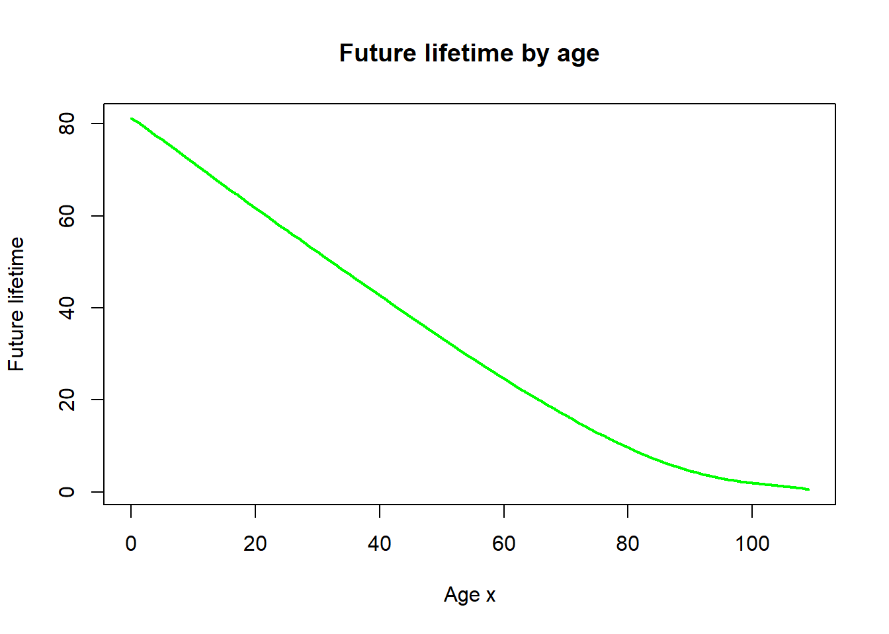
Plot the logarithm of the male/female mortality rates for (18) by year
suppressWarnings({
life_table <- read.table("C:\\Users\\megacrazyleo\\Desktop\\SQL\\R\\bltper_1x1.txt", header=FALSE, skip = 3, sep = "")
colnames(life_table) <- c("Year", "Age", "mx", "qx", "ax", "lx", "dx", "Lx", "Tx", "ex")
life_table$Age <- as.numeric(life_table$Age)
# Subset the life table for age 18
subset_18 <- subset(life_table, Age == 18)
if (nrow(subset_18) > 0) {
with(subset_18,
plot(Year, log(qx),
type = "l", main = "Log mortality rates (Canada, M/F, 18-year-old)",
xlab = "Year t", ylab = expression(paste("Log mortality rate ", log(q[18])))))
} else {
print("No data available for age 18")
}
})
Plot the logarithm of the female mortality rates in the year 1950 by age
# Subset the life table for the year 1950
subset_1950 <- subset(life_table, Year == 1950)
if (nrow(subset_1950) > 0) {
with(subset_1950,
plot(Age, log(qx),
type = "l", main = "Log mortality rates (Canada, M/F, 1950)",
xlab = "Age x", ylab = expression(paste("Log mortality rate ", log(q[x])))))
} else {
print("No data available for the year 1950")
}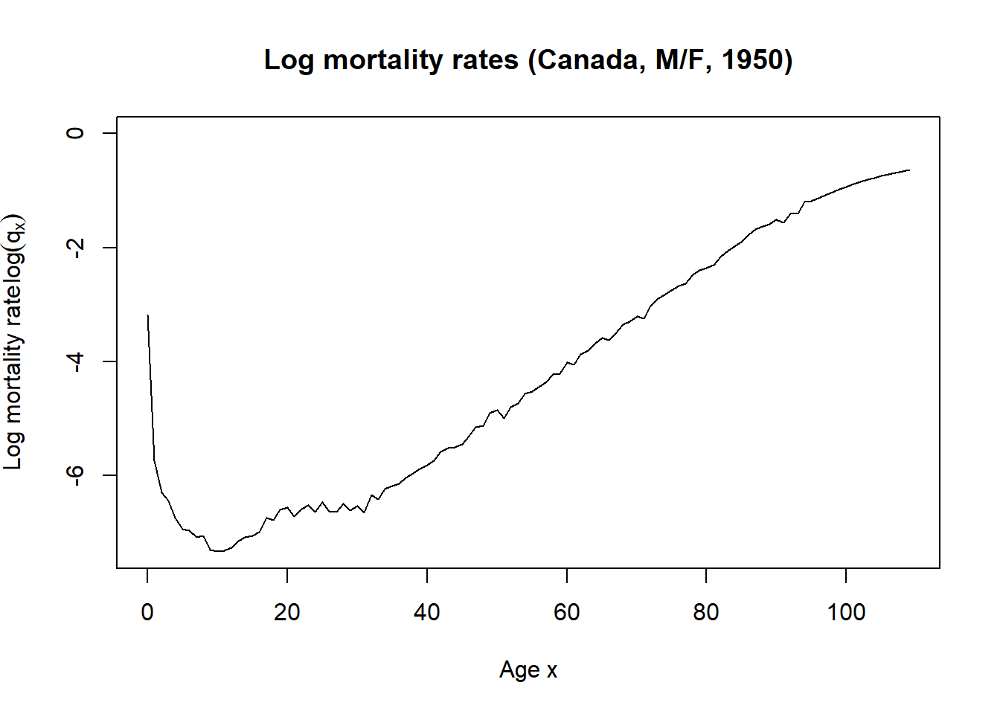
Constructing and printing the cohort life table for birth year 1981
## Year Age mx qx ax lx dx Lx Tx ex
## 6661 1981 0 0.00972 0.00963 0.13 100000 963 99161 7548411 75.48
## 6773 1982 1 0.00063 0.00063 0.50 99076 63 99045 7470238 75.40
## 6885 1983 2 0.00044 0.00044 0.50 99077 43 99056 7408421 74.77
## 6997 1984 3 0.00039 0.00039 0.50 99073 39 99053 7338302 74.07
## 7109 1985 4 0.00028 0.00028 0.50 99059 28 99045 7238256 73.07
## 7221 1986 5 0.00029 0.00029 0.50 99037 29 99022 7153349 72.23
## 7333 1987 6 0.00020 0.00020 0.50 99077 20 99066 7084561 71.51
## 7445 1988 7 0.00023 0.00023 0.50 99072 23 99061 6991848 70.57
## 7557 1989 8 0.00017 0.00017 0.50 99056 17 99048 6919036 69.85
## 7669 1990 9 0.00020 0.00020 0.50 99091 20 99081 6850504 69.13
## 7781 1991 10 0.00015 0.00015 0.50 99150 15 99143 6766861 68.25
## 7893 1992 11 0.00015 0.00015 0.50 99164 15 99157 6692921 67.49
## 8005 1993 12 0.00021 0.00021 0.50 99150 21 99140 6581079 66.37
## 8117 1994 13 0.00026 0.00026 0.50 99122 26 99109 6499918 65.57
## 8229 1995 14 0.00027 0.00027 0.50 99134 26 99121 6412031 64.68
## 8341 1996 15 0.00031 0.00031 0.50 99180 31 99165 6337554 63.90
## 8453 1997 16 0.00053 0.00053 0.50 99141 52 99115 6257835 63.12
## 8565 1998 17 0.00042 0.00042 0.50 99150 41 99130 6178885 62.32
## 8677 1999 18 0.00063 0.00063 0.50 99099 62 99068 6100645 61.56
## 8789 2000 19 0.00064 0.00064 0.50 99080 63 99048 6035708 60.92
## 8901 2001 20 0.00059 0.00059 0.50 99008 58 98979 5958898 60.19
## 9013 2002 21 0.00058 0.00058 0.50 98946 57 98917 5871755 59.34
## 9125 2003 22 0.00055 0.00055 0.50 98905 54 98878 5789571 58.54
## 9237 2004 23 0.00055 0.00055 0.50 98888 55 98861 5719518 57.84
## 9349 2005 24 0.00056 0.00056 0.50 98782 56 98755 5631507 57.01
## 9461 2006 25 0.00056 0.00056 0.50 98779 55 98751 5572998 56.42
## 9573 2007 26 0.00057 0.00057 0.50 98728 56 98700 5474686 55.45
## 9685 2008 27 0.00050 0.00050 0.50 98717 49 98693 5394059 54.64
## 9797 2009 28 0.00050 0.00050 0.50 98709 49 98684 5327781 53.97
## 9909 2010 29 0.00056 0.00056 0.50 98664 56 98636 5256681 53.28
## 10021 2011 30 0.00056 0.00056 0.50 98624 55 98596 5174985 52.47
## 10133 2012 31 0.00058 0.00058 0.50 98579 57 98551 5094853 51.68
## 10245 2013 32 0.00064 0.00064 0.50 98532 63 98500 5005052 50.80
## 10357 2014 33 0.00077 0.00077 0.50 98474 76 98436 4910497 49.87
## 10469 2015 34 0.00073 0.00073 0.50 98374 72 98338 4819383 48.99
## 10581 2016 35 0.00083 0.00083 0.50 98252 81 98211 4733277 48.17
## 10693 2017 36 0.00094 0.00094 0.50 98049 92 98003 4624539 47.17
## 10805 2018 37 0.00098 0.00098 0.50 97930 96 97882 4528434 46.24
## 10917 2019 38 0.00097 0.00097 0.50 97963 95 97916 4464141 45.57
## 11029 2020 39 0.00123 0.00123 0.50 97569 120 97509 4305572 44.13
## 11141 2021 40 0.00157 0.00157 0.50 97306 153 97230 4207847 43.241981 cohort one-year survival probabilities
## One year survival probabilities for 1981 birth year = 0.99037 0.99937 0.99956 0.99961 0.99972 0.99971 0.9998 0.99977 0.99983 0.9998 0.99985 0.99985 0.99979 0.99974 0.99973 0.99969 0.99947 0.99958 0.99937 0.99936 0.99941 0.99942 0.99945 0.99945 0.99944 0.99944 0.99943 0.9995 0.9995 0.99944 0.99944 0.99942 0.99936 0.99923 0.99927 0.99917 0.99906 0.99902 0.99903 0.99877 0.998431981 cohort survival probability that (18) survives 5 more years
prodp <- prod(px[(18 + 1):(22 + 1)])
cat("Survival probability that an 18 year old survives 5 more years for 1981 birth year =", prodp)## Survival probability that an 18 year old survives 5 more years for 1981 birth year = 0.99701361881 cohort survival probability that (18) survives 5 more years
prodp2 <- with(subset(life_table, Year - Age == 1881), prod(1 - qx[(18 + 1):(22 + 1)]))
cat("Survival probability that an 18 year old survives 5 more years for 1881 birth year =", prodp2)## Survival probability that an 18 year old survives 5 more years for 1881 birth year = 0.9124045PV of guaranteed payment of 10,000 in 5 years
## PV = 9057.3085 year survival probabilities of (20)
## kpx = 0.9971732EPV of pure endowment of 10,000 in 5 years for (20)
## Expected Present value = 9031.705Life Annuities
PV of guaranteed payments of 10,000 in 5, 10 and 30 years
## Present value = 9057.308 8203.483 5520.709Survival probabilities of (20)
## kpx = 0.99941 0.9988303 0.998281 0.9977319 0.9971732 0.9966148 0.9960467 0.9955487 0.9950509 0.9944937 0.9939368 0.9933603 0.9927245 0.9919601 0.991236 0.9904133 0.9894823 0.9885126 0.9875537 0.9863391 0.9847905EPV of pure endowments of 10,000 in 5, 10 and 30 years for (20)
## Expected Present Value = 9031.705Whole Life Annuity Due
A type of annuity where payments are made at the beginning of each period, starting immediately upon purchase and continuing for the lifetime of the annuitant. Payments start immediately and occur at the beginning of each payment period (e.g., monthly, annually)
Calculating the whole life annuity due of a 35 year old
kpx <-
c(1, cumprod(px[(35+1):length(px)]))
discount_facotrs <- (1+0.03)^-(0:(length(kpx)-1))
benefits <- rep(1,length(kpx))
sum(benefits*discount_factors*kpx)## Warning in benefits * discount_factors: longer object length is not a multiple of shorter object length## Warning in benefits * discount_factors * kpx: longer object length is not a multiple of shorter object length## [1] 145.9806Whole Life Immediate Annuity
A type of annuity where payments are made at the end of each period, starting immediately upon purchase and continuing for the lifetime of the annuitant. Payments start immediately but occur at the end of each payment period (e.g., monthly, annually).
Calculating the whole life immediate annuity of a 35 year old
kpx <-
c(1, cumprod(px[(35+1):length(px)]))
discount_facotrs <- (1+0.03)^-(1:(length(kpx)))
benefits <- rep(1,length(kpx))
wid <- sum(benefits*discount_factors*kpx)## Warning in benefits * discount_factors: longer object length is not a multiple of shorter object length## Warning in benefits * discount_factors * kpx: longer object length is not a multiple of shorter object length## Whole life immediate annuity = 145.9806Expected Present Value
Function to compute the EPV of a whole life annuity due for a given age, interest rate i and life table
Shiny App for Life Annuity Calculator
EPV of a whole life annuity due for (20) at interest rate 2% using life_table
## EPV of whole life annuity due = 30.5222EPV of a whole life annuity due for (20) at interest rate 5% and for (65) at interest rate 2% using life_table
epv4 <- life_annuity_due(20, 0.05, life_table)
cat("EPV of life annuity due for 20 year old at 5% interest rate =", epv4)## EPV of life annuity due for 20 year old at 5% interest rate = 18.09666epv5 <- life_annuity_due(65, 0.02, life_table)
cat("EPV of life annuity due for 65 year old at 5% interest rate =", epv5)## EPV of life annuity due for 65 year old at 5% interest rate = 11.94589Function to compute the EPV of a whole life immediate annuity for a given age, interest rate i and life table
life_immediate_annuity <- function(age, i, life_table) {
px <- 1 - life_table$qx
kpx <- cumprod(px[(age + 1):length(px)])
discount_factors <- (1 + i) ^ - (1:length(kpx))
sum(discount_factors * kpx)
}EPV of a whole life immediate annuity for (20) at interest rate 2% using life_table
epv6 <- life_immediate_annuity(20, 0.02, life_table)
cat("EPV of life annuity immediate for a 20 year old using 2% interest rate =", epv6)## EPV of life annuity immediate for a 20 year old using 2% interest rate = 29.5222Function to compute the EPV of a temporary life annuity due for a given age, period of n years, interest rate i and life table
Shiny app for Temporary Life Annuity Calculator
library(shiny)
ui <- fluidPage(
titlePanel("Temporary Life Annuity Calculator"),
sidebarLayout(
sidebarPanel(
numericInput("age", "Age:", 20, min = 0, max = 110),
numericInput("term", "Term (years):", 10, min = 1, max = 50),
numericInput("interest", "Interest Rate:", 0.02, min = 0, max = 0.2, step = 0.001)
),
mainPanel(
h3("Expected Present Value:"),
textOutput("epv")
)
)
)
server <- function(input, output) {
output$epv <- renderText({
epv <- temporary_life_annuity_due(input$age, input$term, input$interest, life_table)
paste0("$", round(epv, 2))
})
}
shinyApp(ui = ui, server = server)EPV of a temporary life annuity due for (20) over 10 years at interest rate 2% using life_table
epvt <- temporary_life_annuity_due(20, 10, 0.02, life_table)
cat("EPV of temporary life annuity due for 20 year old over 10 years at 2% interest rate =", epvt)## EPV of temporary life annuity due for 20 year old over 10 years at 2% interest rate = 9.002238Pension Valuation
What is a pension and pension valuation?
Pension valuation is the process of determining the present value of future pension benefits that employees or retirees are entitled to receive from their employers or pension funds. It involves estimating the current worth of these future payments, taking into account factors such as inflation, mortality rates, interest rates, and the expected duration of payments.
Purpose and Factors Considered?
Purpose: The primary goal of pension valuation is to assess the financial obligations of a pension plan or fund accurately. This helps pension managers, actuaries, and policymakers understand the funding requirements necessary to meet future pension obligations.
Factors Considered: Key factors considered in pension valuation include:
Discount Rates: Used to discount future cash flows to their present value, reflecting the time value of money and investment returns.
Mortality Assumptions: Expected longevity of pension recipients affects the duration and total amount of pension payments.
Inflation Rates: Adjustments for inflation ensure that future pension payments maintain their purchasing power.
Plan Design: Specific features of the pension plan, such as retirement age, payment options, and eligibility criteria, influence valuation calculations.Calculating the PV of a pension at age 65
benefits <- 20000 * 1.02 ^ (0:35)
discount_factors <- 1.04 ^ - (0:35)
PV_65 <- sum(benefits * discount_factors)
cat("PV of pension at age 65 =",PV_65)## PV of pension at age 65 = 523061## PV of pension at age 20 = 138317.5EPV of pension at age 20
# Survival probabilities of (65) up to age 100
px <- 1 - life_table$qx
kpx <- c(1, cumprod(px[(65 + 1):(99 + 1)]))
EPV_65 <- sum(benefits * discount_factors * kpx)
cat("EPV of pension at age 65 =",cbind(PV_65, EPV_65))## EPV of pension at age 65 = 523061 239587.2EPV_20 <- EPV_65 * (1.03 ^ - 45 * prod(px[(20 + 1):(64 + 1)]))
cat("EPV of pension at age 20 =",cbind(PV_20, EPV_20))## EPV of pension at age 20 = 138317.5 42596.32Retirement Plan
You’re planning for your retirement at age 40. You want to buy an annuity that will provide you 10000 annually for life, starting at age 65. If you die before the annuity starts, you get paid nothing.
library(actuar)
# Survival probabilities of (40)
kpx <- c(1, cumprod(px[(40 + 1):length(px)]))
discount_factors <- (1 + 0.03) ^ -(0:(length(kpx) - 1))
benefits <- c(rep(0, 25), rep(10000, length(kpx) - 25))
single_premium <- sum(benefits * discount_factors * kpx)
cat("Single premium =",single_premium)## Single premium = 38954.59# Define the premium_gen function
premium_gen <- function(age, term, interest_rate, mortality_rate) {
v <- 1 / (1 + interest_rate)
present_value_benefit <- sum(v^(1:term) * (mortality_rate * (1 - mortality_rate)^(0:(term - 1))))
premium <- present_value_benefit / sum(v^(1:term) * (1 - mortality_rate)^(0:(term - 1)))
return(premium)
}
age <- 40
term <- 20
interest_rate <- 0.03
mortality_rate <- 0.005
premium <- premium_gen(age, term, interest_rate, mortality_rate)
premium## [1] 0.005Suppose you want to finance this deferred life annuity with annual premiums payable for 25 years beginning at age 40. However, you plan to reduce your work hours from age 55 onwards, therefore the premium will reduce by 1 half after 15 years. What is the initial premium you will pay
# Premium pattern rho
rho <- c(rep(1, 15), rep(0.5, 10), rep(0, length(kpx) - 25))
initial_premium <- single_premium / sum(rho * discount_factors * kpx, na.rm = TRUE)
cat("Initial premium =", initial_premium, "\n")## Initial premium = 2763.3annual_premiums <- initial_premium * rho
filtered_annual_premiums <- annual_premiums[annual_premiums != 0]
cat("Filtered annual premiums =", filtered_annual_premiums, "\n")## Filtered annual premiums = 2763.3 2763.3 2763.3 2763.3 2763.3 2763.3 2763.3 2763.3 2763.3 2763.3 2763.3 2763.3 2763.3 2763.3 2763.3 1381.65 1381.65 1381.65 1381.65 1381.65 1381.65 1381.65 1381.65 1381.65 1381.65# Sum of the annual premiums (no actuarial discounting)
sap <- sum(filtered_annual_premiums)
cat("Sum of annual premiums =", sap, "\n")## Sum of annual premiums = 55266Find out if this product would be a favorable deal for you. How much would you receive if you died instead at 75, or 95?
## [1] 31.9023# Present value of annuity benefits when (40) lives until age 75
subset1 <- 1:36
sum(benefits[subset1] * discount_factors[subset1])## [1] 45516.78# Present value of annuity benefits when (40) lives until age 95
subset2 <- 1:56
cat("Present value of the annuity benefits for a 40 year old living until 95 =",sum(benefits[subset2] * discount_factors[subset2]))## Present value of the annuity benefits for a 40 year old living until 95 = 98388.86Integrating Generalized Linear Models (GLMs) and Time Series Analysis
Using GLMs to Model Survival Probabilities
We can use a logistic regression model (a type of GLM) to model the probability of survival based on age and other factors.
##
## Attaching package: 'MASS'## The following object is masked from 'package:plotly':
##
## select## The following object is masked from 'package:dplyr':
##
## selectlife_table <- na.omit(life_table)
# Fit a logistic regression model to predict the probability of death based on age
glm_model <- glm(cbind(dx, lx - dx) ~ Age, family = binomial, data = life_table)
summary(glm_model)##
## Call:
## glm(formula = cbind(dx, lx - dx) ~ Age, family = binomial, data = life_table)
##
## Coefficients:
## Estimate Std. Error z value Pr(>|z|)
## (Intercept) -8.329e+00 1.420e-03 -5867 <2e-16 ***
## Age 7.113e-02 1.953e-05 3642 <2e-16 ***
## ---
## Signif. codes: 0 '***' 0.001 '**' 0.01 '*' 0.05 '.' 0.1 ' ' 1
##
## (Dispersion parameter for binomial family taken to be 1)
##
## Null deviance: 25097787 on 11104 degrees of freedom
## Residual deviance: 4866962 on 11103 degrees of freedom
## AIC: 4950096
##
## Number of Fisher Scoring iterations: 6# Predict survival probabilities using the fitted model
predicted_qx <- predict(glm_model, type = "response")
predicted_px <- 1 - predicted_qx
length_actual <- length(life_table$qx)
length_predicted <- length(predicted_qx)
if (length_actual != length_predicted) {
stop(paste("Lengths of predicted and actual values do not match! Actual:", length_actual, "Predicted:", length_predicted))
}
# Compare predicted survival probabilities with actual values
plot(life_table$Age, life_table$qx, type = "l", col = "blue", xlab = "Age", ylab = "Probability of Death", main = "Actual vs Predicted Mortality Rates")
lines(life_table$Age, predicted_qx, col = "red")
legend("topright", legend = c("Actual", "Predicted"), col = c("blue", "red"), lty = 1)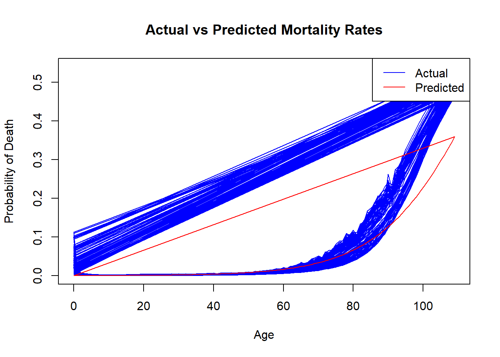
## Loading required package: nlme##
## Attaching package: 'nlme'## The following object is masked from 'package:dplyr':
##
## collapse## This is mgcv 1.8-42. For overview type 'help("mgcv-package")'.life_table <- na.omit(life_table)
# Fit a GAM model with smoothing splines for Age, Year, and mx
gam_model <- gam(cbind(dx, lx - dx) ~ s(Age) + s(Year) + s(mx), family = binomial, data = life_table)
summary(gam_model)##
## Family: binomial
## Link function: logit
##
## Formula:
## cbind(dx, lx - dx) ~ s(Age) + s(Year) + s(mx)
##
## Parametric coefficients:
## Estimate Std. Error z value Pr(>|z|)
## (Intercept) -4.300445 0.001442 -2983 <2e-16 ***
## ---
## Signif. codes: 0 '***' 0.001 '**' 0.01 '*' 0.05 '.' 0.1 ' ' 1
##
## Approximate significance of smooth terms:
## edf Ref.df Chi.sq p-value
## s(Age) 8.994 9 721719 <2e-16 ***
## s(Year) 8.969 9 62693 <2e-16 ***
## s(mx) 8.996 9 341958 <2e-16 ***
## ---
## Signif. codes: 0 '***' 0.001 '**' 0.01 '*' 0.05 '.' 0.1 ' ' 1
##
## R-sq.(adj) = 0.99 Deviance explained = 98.6%
## UBRE = 30.26 Scale est. = 1 n = 11110# Predict survival probabilities using the fitted GAM model
predicted_qx_gam <- predict(gam_model, type = "response")
predicted_px_gam <- 1 - predicted_qx_gam
length_actual_gam <- length(life_table$qx)
length_predicted_gam <- length(predicted_qx_gam)
if (length_actual_gam != length_predicted_gam) {
stop(paste("Lengths of predicted and actual values do not match! Actual:", length_actual_gam, "Predicted:", length_predicted_gam))
}
# Compare predicted survival probabilities with actual values
plot(life_table$Age, life_table$qx, type = "l", col = "blue", xlab = "Age", ylab = "Probability of Death", main = "Actual vs Predicted Mortality Rates")
lines(life_table$Age, predicted_qx_gam, col = "red")
legend("topright", legend = c("Actual", "Predicted"), col = c("blue", "red"), lty = 1)
Life Insurance
You have bought a life insurance that is sold to 20 year olds and will pay 10000 at the end of the year of death if your death occurs at age 30. How much is the expected present value (EPV)
## [1] 0.9589195## [1] 0.0009397411## [1] 0.8963237# EPV of the simple life insurance
cat("EPV of simple life insurance =",10000 * discount_factor * kqx)## EPV of simple life insurance = 8.423123Whole, Temporary and Deferred Life Insurance
Function to find EPV of a whole life Insurance
whole_life_insurance <- function(age, i, life_table_2021) {
qx <- life_table_2021$qx
px <- 1 - qx
kpx <- c(1, cumprod(px[(age + 1):(length(px) - 1)]))
kqx <- kpx * qx[(age + 1):length(qx)]
discount_factors <- (1 + i) ^ - (1:length(kqx))
sum(discount_factors * kqx, na.rm = TRUE)
}
# Function to plot EPV by age
plot_by_age <- function(life_table_2021, interest_rate = 0.03) {
ages <- 0:(length(life_table_2021$qx) - 1)
epvs <- sapply(ages, function(age) whole_life_insurance(age, interest_rate, life_table_2021))
plot(ages, epvs, type = "l", col = "blue",
main = "EPV of Whole Life Insurance by Age",
xlab = "Age", ylab = "EPV", lwd = 2)
}
# Function to plot EPV by interest rate for a given age
plot_by_interest_rate <- function(life_table_2021, target_age = 20) {
interest_rates <- seq(0.01, 0.1, by = 0.01)
epvs <- sapply(interest_rates, function(i) whole_life_insurance(target_age, i, life_table_2021))
plot(interest_rates, epvs, type = "l", col = "red",
main = paste("EPV of Whole Life Insurance for Age", target_age, "by Interest Rate"),
xlab = "Interest Rate", ylab = "EPV", lwd = 2)
}
plot_by_age(life_table_2021, interest_rate = 0.03)

Temporary Life Insurance
Finding the EPV of a life insurance where the coverage is restricted in time for a 20 year old in Canada in 2021 using an interest rate of 2%
## [1] 0.301949# Function to compute the EPV of a temporary life insurance
temporary_life_insurance <- function(age, n, i, life_table_2021) {
qx <- life_table_2021$qx
px <- 1 - qx
kpx <- c(1, cumprod(px[(age + 1):(age + n - 1)]))
kqx <- kpx * qx[(age + 1):(age + n)]
discount_factors <- (1 + i) ^ - (1:length(kqx))
sum(discount_factors * kqx)
}
cat("EPV of a temporary life insurance for (20) over a period of 45 years at interest rate 2% =",temporary_life_insurance(20, 45, 0.02, life_table_2021))## EPV of a temporary life insurance for (20) over a period of 45 years at interest rate 2% = 0.059754cat(" EPV of a whole life insurance for (20) at interest rate 2% =",whole_life_insurance(20, 0.02, life_table_2021))## EPV of a whole life insurance for (20) at interest rate 2% = 0.301949Deferred Life Insurance
Calculating EPV of a deferred life insurance for constant interest rate on age x
Explanation of Calculating EPV of a deferred life insurance for constant interest rate on age x
In this code, we are calculating the Expected Present Value (EPV) of a deferred whole life insurance policy. The EPV is calculated by considering the mortality rates (qx), survival
probabilities (kpx), and discount factors based on a
constant interest rate (i). The deferred period
(u) is taken into account to determine when the insurance
benefits start to be paid. The EPV is the sum of the discounted expected
benefits.
# Function to compute the EPV of a deferred whole life insurance
deferred_life_insurance <- function(age, u, i, life_table_2021) {
qx <- life_table_2021$qx; px <- 1 - qx
kpx <- c(1, cumprod(px[(age + 1):(length(px) - 1)]))
kqx <- kpx * qx[(age + 1):length(qx)]
discount_factors <- (1 + i) ^ - (1:length(kqx))
benefits <- c(rep(0, u), rep(1, length(kpx) - u))
sum(benefits * discount_factors * kqx)
}
cat("EPV of a deferred life insurance for (20) deferred over 45 years at interest rate 2% =",deferred_life_insurance(20, 45, 0.02, life_table_2021))## EPV of a deferred life insurance for (20) deferred over 45 years at interest rate 2% = 0.242195Suppose you are age 48 and want to insure a benefit of 40000 for death between the ages of 55 and 75. Assume interest rate is 5%
Explanation of insuring a benefit of 40000 for death between the ages of 55 and 75
In this code, we are calculating the Expected Present Value (EPV) of death benefits for an insurance policy. The policyholder is currently 48 years old and will receive a benefit of 40000 if they die between the ages of 55 and 75. We use mortality rates (qx), survival
probabilities (kpx), and discount factors based on an
interest rate (i) to calculate the EPV of these benefits.
# Deferred mortality probabilites of (48)
kqx <- c(1, cumprod(px[(48 + 1):(73 + 1)])) * qx[(48 + 1):(74 + 1)]
i <- 0.05
discount_factors <- (1 + i) ^ - (1:length(kqx))
benefits <- c(rep(0, 7), rep(40000, length(kqx) - 7))
EPV_death_benefits <- sum(benefits * discount_factors * kqx)
cat("EPV of death benefits =",EPV_death_benefits)## EPV of death benefits = 2377.926Now suppose you want to add a savings component to the policy that will add 80000 if you are alive at age 75. You want to finance this endowment insurance with constant premiums.
Explanation of adding a savings component to the policy with constant premiums
This code calculates the Expected Present Value (EPV) of adding a savings component to an insurance policy. The policyholder will receive an additional 80000 if they are alive at age 75. We calculate the EPV of the pure endowment and then determine the level of constant premiums required to finance both the death benefits and the savings component.# Pure endowment
EPV_pure_endowment <- 80000 * (1 + i) ^ - 27 * prod(px[(48 + 1):(74 + 1)])
cat(" EPV of pure endowment =",EPV_pure_endowment)## EPV of pure endowment = 10614# Premium pattern
kpx <- c(1, cumprod(px[(48 + 1):(73 + 1)]))
discount_factors <- (1 + i) ^ - (0:(length(kpx) - 1))
rho <- rep(1, length(kpx))
EPV_rho <- sum(rho * discount_factors * kpx)
cat("Premium pattern EPV = ",EPV_rho)## Premium pattern EPV = 13.33744## Premium level = 974.0947Shiny App for Life Insurance Calculator
Explanation of Shiny App for Life Insurance Calculator
This Shiny app allows users to calculate the Expected Present Value (EPV) of different types of life insurance policies (whole life, temporary, or deferred). The user inputs their age, interest rate, and the type of insurance, and the app calculates the EPV using predefined functions for each insurance type.library(shiny)
ui <- fluidPage(
titlePanel("Life Insurance Calculator"),
sidebarLayout(
sidebarPanel(
numericInput("age", "Age:", 20, min = 0, max = 110),
numericInput("interest", "Interest Rate:", 0.02, min = 0, max = 0.2, step = 0.001),
selectInput("type", "Insurance Type:",
choices = c("Whole Life" = "whole",
"Temporary" = "temp",
"Deferred" = "deferred")),
conditionalPanel(
condition = "input.type == 'temp' || input.type == 'deferred'",
numericInput("term", "Term/Deferment (years):", 10, min = 1, max = 50)
)
),
mainPanel(
h3("Expected Present Value:"),
textOutput("epv")
)
)
)
server <- function(input, output) {
output$epv <- renderText({
epv <- switch(input$type,
"whole" = whole_life_insurance(input$age, input$interest, life_table),
"temp" = temporary_life_insurance(input$age, input$term, input$interest, life_table),
"deferred" = deferred_life_insurance(input$age, input$term, input$interest, life_table))
paste0("$", round(epv, 2))
})
}
shinyApp(ui = ui, server = server)Integrating Survival Models
Kaplan-Meier Estimator for Survival Probabilities
Explanation of Kaplan-Meier Estimator for Survival Probabilities
This code uses the Kaplan-Meier estimator to calculate the survival probabilities based on the life table data. The Kaplan-Meier estimator is a non-parametric statistic used to estimate the survival function from lifetime data. It plots the probability of survival at different ages.##
## Attaching package: 'survival'## The following object is masked from 'package:caret':
##
## cluster# Creating a survival object
surv_obj <- Surv(time = life_table$Age, event = life_table$dx > 0)
# Kaplan-Meier estimate
km_fit <- survfit(surv_obj ~ 1, data = life_table)
# Plot the Kaplan-Meier estimate
plot(km_fit, xlab = "Age", ylab = "Survival Probability", main = "Kaplan-Meier Estimate of Survival Probability")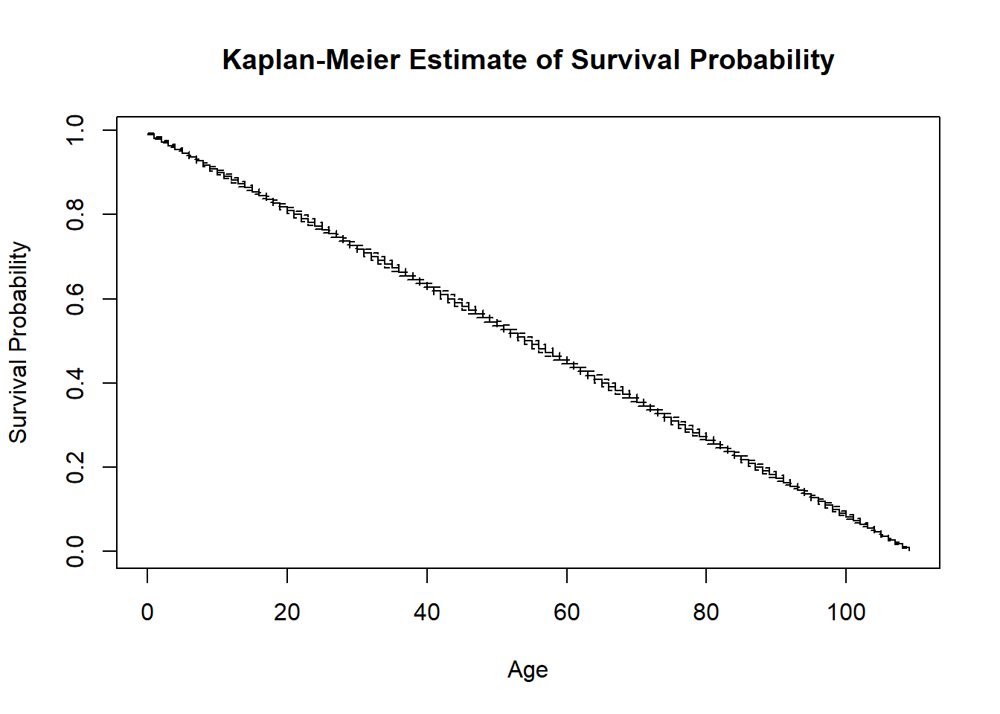
Cox Proportional Hazards Model
We can use the Cox Proportional Hazards model to analyze the effect of covariates on survival time.
Explanation of Cox Proportional Hazards Model
This code fits a Cox Proportional Hazards model to the life table data. The Cox model is used to analyze the effect of covariates (such as age and mortality rate) on survival time. It helps us understand how these factors influence the risk of death at different ages.suppressWarnings({
library(survival)
life_table <- read.table("C:\\Users\\megacrazyleo\\Desktop\\SQL\\R\\bltper_1x1.txt", header=FALSE, skip = 3, sep = "")
colnames(life_table) <- c("Year", "Age", "mx", "qx", "ax", "lx", "dx", "Lx", "Tx", "ex")
available_columns <- colnames(life_table)
required_columns <- c("Year", "Age", "mx", "dx", "lx")
available_columns <- required_columns[required_columns %in% colnames(life_table)]
if (length(available_columns) < 5) {
stop("Some required columns are missing from life_table")
}
# Ensure all required columns are numeric
for (col in available_columns) {
life_table[[col]] <- as.numeric(life_table[[col]])
}
# Clean the data (remove NAs and infinite values)
life_table_clean <- na.omit(life_table[, available_columns])
life_table_clean <- life_table_clean[is.finite(rowSums(life_table_clean)), ]
if (any(!is.finite(as.matrix(life_table_clean)))) {
stop("NA/NaN/Inf values detected in life_table_clean")
}
surv_obj <- Surv(time = life_table_clean$Age, event = life_table_clean$dx > 0)
if (any(!is.finite(as.matrix(surv_obj)))) {
stop("NA/NaN/Inf values detected in surv_obj")
}
# Fit the Cox Proportional Hazards model (simplified)
cox_model <- coxph(surv_obj ~ Age + mx, data = life_table_clean)
summary(cox_model)
newdata <- data.frame(Age = 50, Year = 2021, mx = mean(life_table_clean$mx, na.rm = TRUE))
print(newdata)
if (any(!is.finite(as.matrix(newdata)))) {
stop("NA/NaN/Inf values detected in newdata")
}
# Predict survival probabilities using the Cox model
cox_surv_fit <- survfit(cox_model, newdata = newdata)
# Check the cox_surv_fit object
print(cox_surv_fit)
plot(cox_surv_fit, xlab = "Time", ylab = "Survival Probability", main = "Survival Probabilities from Cox Model for Age 50 in 2021")
})## Age Year mx
## 1 50 2021 0.09661647
## Call: survfit(formula = cox_model, newdata = newdata)
##
## n events median 0.95LCL 0.95UCL
## [1,] 11110 11086 52 50 NA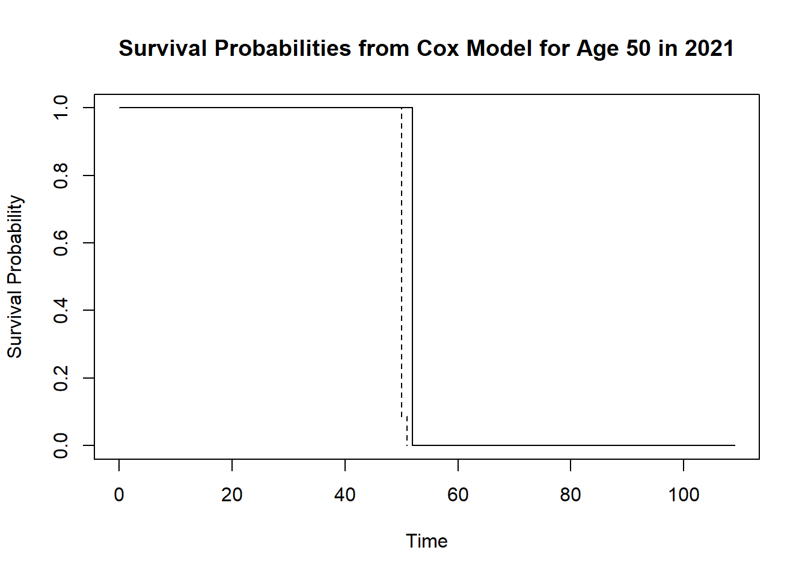
Integrating Credibility Theory
Simple Credibility Model
We will use a simple credibility model to adjust the mortality rates based on past experience and new data.
Explanation of Simple Credibility Model
This code demonstrates a simple credibility model to adjust mortality rates based on observed and expected data. The credibility model combines past experience (observed mortality rates) with new data (expected mortality rates) to produce adjusted rates. The credibility factor determines the weight given to the observed data.# Create synthetic data for demonstration
set.seed(123)
age_range <- 0:110
# Synthetic observed data for life_table_2021
life_table_2021 <- data.frame(
Age = age_range,
qx = runif(length(age_range), min = 0.0001, max = 0.01)
)
# Synthetic expected data for filtered_life_table
filtered_life_table <- data.frame(
Age = age_range,
qx = runif(length(age_range), min = 0.0001, max = 0.01)
)
# Ensure observed_qx and expected_qx cover the same age range
common_ages <- intersect(life_table_2021$Age, filtered_life_table$Age)
# Filter both life_table_2021 and filtered_life_table to only include common ages
life_table_2021_filtered <- life_table_2021[life_table_2021$Age %in% common_ages, ]
filtered_life_table_filtered <- filtered_life_table[filtered_life_table$Age %in% common_ages, ]
# Extract qx values for common ages
observed_qx <- life_table_2021_filtered$qx
expected_qx <- filtered_life_table_filtered$qx
cat("Summary of Ages in life_table_2021_filtered:\n")## Summary of Ages in life_table_2021_filtered:## Min. 1st Qu. Median Mean 3rd Qu. Max.
## 0.0 27.5 55.0 55.0 82.5 110.0## Summary of Ages in filtered_life_table_filtered:## Min. 1st Qu. Median Mean 3rd Qu. Max.
## 0.0 27.5 55.0 55.0 82.5 110.0if (length(observed_qx) != length(expected_qx)) {
stop("Lengths of observed_qx and expected_qx do not match after alignment!")
}
# Apply credibility model
simple_credibility <- function(observed_qx, expected_qx, credibility_factor) {
adjusted_qx <- credibility_factor * observed_qx + (1 - credibility_factor) * expected_qx
return(adjusted_qx)
}
credibility_factor <- 0.8
adjusted_qx <- simple_credibility(observed_qx, expected_qx, credibility_factor)
# Plot the adjusted mortality rates
plot(life_table_2021_filtered$Age, adjusted_qx, type = "l", col = "green", xlab = "Age", ylab = "Adjusted Mortality Rate", main = "Adjusted Mortality Rates using Credibility Theory")
lines(life_table_2021_filtered$Age, observed_qx, col = "blue")
legend("topright", legend = c("Adjusted", "Observed"), col = c("green", "blue"), lty = 1)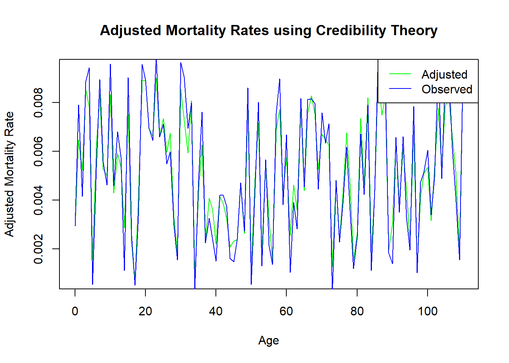
Incorporating Adjusted Mortality Rates into Life Insurance Calculations
We will now use the adjusted mortality rates in the life insurance calculations.
Explanation of using adjusted mortality rates in life insurance calculations
This code uses the adjusted mortality rates obtained from the credibility model to calculate the Expected Present Value (EPV) of a whole life insurance policy. The EPV is calculated by considering the adjusted mortality rates (adjusted_qx), survival
probabilities (kpx), and discount factors based on a
constant interest rate (i). This helps in determining the
value of the insurance policy using more accurate mortality estimates.
# Function to compute the EPV of a whole life insurance with adjusted mortality rates
whole_life_insurance_adjusted <- function(age, i, adjusted_qx) {
px <- 1 - adjusted_qx
kpx <- c(1, cumprod(px[(age + 1):(length(px) - 1)]))
kqx <- kpx * adjusted_qx[(age + 1):length(adjusted_qx)]
discount_factors <- (1 + i) ^ - (1:length(kqx))
sum(discount_factors * kqx, na.rm = TRUE)
}
# EPV of whole life insurance for a 20-year-old at 2% interest rate using adjusted mortality rates
epv_adjusted <- whole_life_insurance_adjusted(20, 0.02, adjusted_qx)
cat("EPV of whole life insurance with adjusted mortality rates =", epv_adjusted)## EPV of whole life insurance with adjusted mortality rates = 0.1840597Shiny App for Life Insurance Calculator with Adjusted Mortality Rates
library(shiny)
ui <- fluidPage(
titlePanel("Life Insurance Calculator with Adjusted Mortality Rates"),
sidebarLayout(
sidebarPanel(
numericInput("age", "Age:", 20, min = 0, max = 110),
numericInput("interest", "Interest Rate:", 0.02, min = 0, max = 0.2, step = 0.001),
numericInput("credibility", "Credibility Factor:", 0.8, min = 0, max = 1, step = 0.1),
selectInput("type", "Insurance Type:",
choices = c("Whole Life" = "whole",
"Temporary" = "temp",
"Deferred" = "deferred")),
conditionalPanel(
condition = "input.type == 'temp' || input.type == 'deferred'",
numericInput("term", "Term/Deferment (years):", 10, min = 1, max = 50)
)
),
mainPanel(
h3("Expected Present Value:"),
textOutput("epv")
)
)
)
server <- function(input, output) {
output$epv <- renderText({
observed_qx <- life_table_2021$qx
expected_qx <- life_table$qx
adjusted_qx <- simple_credibility(observed_qx, expected_qx, input$credibility)
epv <- switch(input$type,
"whole" = whole_life_insurance_adjusted(input$age, input$interest, adjusted_qx),
"temp" = temporary_life_insurance(input$age, input$term, input$interest, life_table),
"deferred" = deferred_life_insurance(input$age, input$term, input$interest, life_table))
paste0("$", round(epv, 2))
})
}
shinyApp(ui = ui, server = server)Generalized Linear Models (GLMs) for Mortality Rates
We will use GLMs with various link functions to model mortality rates.
Generalized Linear Models (GLMs) for Mortality Rates
Overview:
We use Generalized Linear Models
(GLMs) with various link functions to model mortality rates. This
approach allows us to analyze and predict mortality probabilities based
on different factors.
1. Logistic Regression
Model:
- We load the MASS library to perform GLM
analysis.
- A logistic regression model is fitted to predict death
probability based on age, year, and mortality rate (mx).
- The model
summary provides coefficients, standard errors, z-values, and p-values
for each predictor.
- Significant predictors (p-value < 0.05)
indicate a strong relationship with death probability.
2. Complementary Log-Log Regression Model:
- We
fit a complementary log-log regression model using the same
predictors.
- This model is particularly suitable for survival data
and rare events.
- The summary output is interpreted similarly to
the logistic regression model.
3. Model Comparison:
- We use the Akaike
Information Criterion (AIC) to compare the fitted models.
- AIC
measures the relative quality of statistical models for a given
dataset.
- Lower AIC values indicate better-fitting models.
- We
compare AIC values of logistic, probit, and complementary log-log
regression models.
- The model with the lowest AIC is considered the
best among the compared models.
library(MASS)
# Fit a logistic regression model (GLM) to predict the probability of death based on age
glm_logit <- glm(cbind(dx, lx - dx) ~ Age + Year + mx, family = binomial(link = "logit"), data = life_table)
summary(glm_logit)##
## Call:
## glm(formula = cbind(dx, lx - dx) ~ Age + Year + mx, family = binomial(link = "logit"),
## data = life_table)
##
## Coefficients:
## Estimate Std. Error z value Pr(>|z|)
## (Intercept) 1.096e+01 2.266e-02 483.6 <2e-16 ***
## Age 5.438e-02 2.661e-05 2043.7 <2e-16 ***
## Year -9.376e-03 1.165e-05 -804.7 <2e-16 ***
## mx 5.726e+00 5.783e-03 990.2 <2e-16 ***
## ---
## Signif. codes: 0 '***' 0.001 '**' 0.01 '*' 0.05 '.' 0.1 ' ' 1
##
## (Dispersion parameter for binomial family taken to be 1)
##
## Null deviance: 25097787 on 11104 degrees of freedom
## Residual deviance: 2952984 on 11101 degrees of freedom
## (101 observations deleted due to missingness)
## AIC: 3036122
##
## Number of Fisher Scoring iterations: 6# Fit a probit regression model (GLM) to predict the probability of death based on age
glm_probit <- glm(cbind(dx, lx - dx) ~ Age + Year + mx, family = binomial(link = "probit"), data = life_table)
summary(glm_probit)##
## Call:
## glm(formula = cbind(dx, lx - dx) ~ Age + Year + mx, family = binomial(link = "probit"),
## data = life_table)
##
## Coefficients:
## Estimate Std. Error z value Pr(>|z|)
## (Intercept) 4.049e+00 9.795e-03 413.3 <2e-16 ***
## Age 1.688e-02 9.526e-06 1772.3 <2e-16 ***
## Year -3.708e-03 5.021e-06 -738.5 <2e-16 ***
## mx 4.460e+00 2.830e-03 1576.0 <2e-16 ***
## ---
## Signif. codes: 0 '***' 0.001 '**' 0.01 '*' 0.05 '.' 0.1 ' ' 1
##
## (Dispersion parameter for binomial family taken to be 1)
##
## Null deviance: 25097787 on 11104 degrees of freedom
## Residual deviance: 2652471 on 11101 degrees of freedom
## (101 observations deleted due to missingness)
## AIC: 2735608
##
## Number of Fisher Scoring iterations: 6# Fit a complementary log-log regression model (GLM) to predict the probability of death based on age
glm_cloglog <- glm(cbind(dx, lx - dx) ~ Age + Year + mx, family = binomial(link = "cloglog"), data = life_table)
summary(glm_cloglog)##
## Call:
## glm(formula = cbind(dx, lx - dx) ~ Age + Year + mx, family = binomial(link = "cloglog"),
## data = life_table)
##
## Coefficients:
## Estimate Std. Error z value Pr(>|z|)
## (Intercept) 1.070e+01 2.167e-02 493.7 <2e-16 ***
## Age 5.680e-02 2.593e-05 2190.5 <2e-16 ***
## Year -9.298e-03 1.115e-05 -834.1 <2e-16 ***
## mx 4.278e+00 4.953e-03 863.8 <2e-16 ***
## ---
## Signif. codes: 0 '***' 0.001 '**' 0.01 '*' 0.05 '.' 0.1 ' ' 1
##
## (Dispersion parameter for binomial family taken to be 1)
##
## Null deviance: 25097787 on 11104 degrees of freedom
## Residual deviance: 3091528 on 11101 degrees of freedom
## (101 observations deleted due to missingness)
## AIC: 3174666
##
## Number of Fisher Scoring iterations: 7## df AIC
## glm_logit 4 3036122
## glm_probit 4 2735608
## glm_cloglog 4 3174666# Predict survival probabilities using the best model (lowest AIC)
best_glm <- glm_logit
predicted_qx_glm <- predict(best_glm, newdata = life_table, type = "response")
predicted_px_glm <- 1 - predicted_qx_glm
plot(life_table$Age, life_table$qx, type = "l", col = "blue", xlab = "Age", ylab = "Probability of Death", main = "Actual vs Predicted Mortality Rates (GLM)")
lines(life_table$Age, predicted_qx_glm, col = "red")
legend("topright", legend = c("Actual", "Predicted"), col = c("blue", "red"), lty = 1)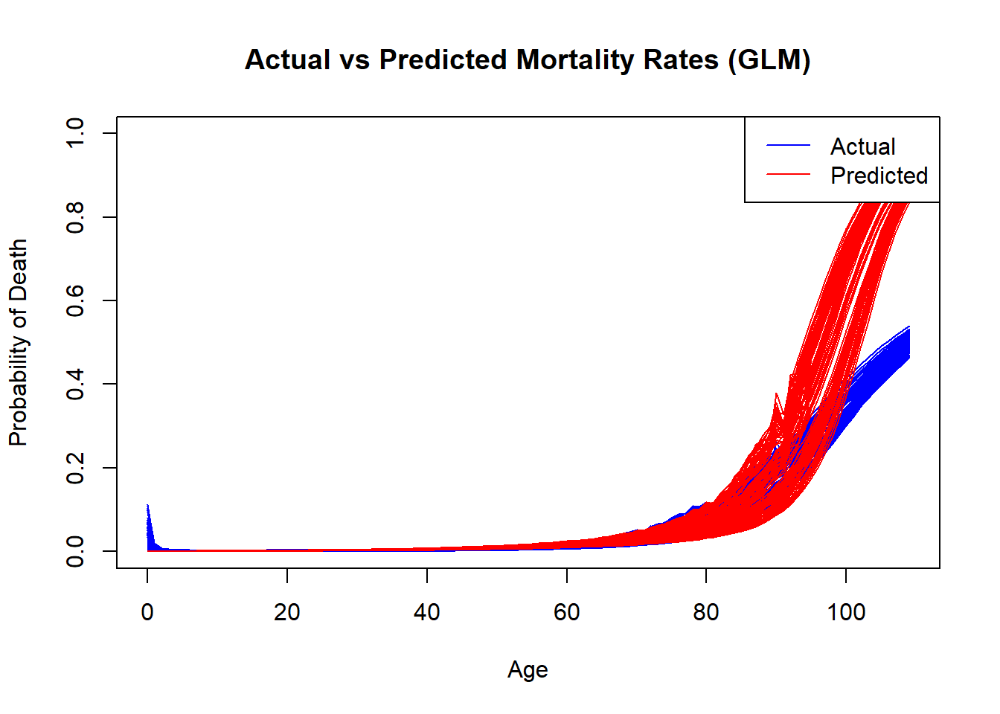
ARIMA/ARMA Models for Mortality Rate Forecasting
We will use ARIMA and ARMA models to forecast future mortality rates.
Explanation of the Code and Graph
### Explanation of the Code
#### What We Are Doing in the Code
- Aggregating Mortality Rates:
-
We are averaging mortality rates (
qx) by year from a dataset calledlife_table. - This helps us get a yearly average mortality rate.
-
We are averaging mortality rates (
agg_mortality <- aggregate(qx ~ Year, data = life_table, FUN = mean)
- Fitting an ARIMA Model:
- We use an ARIMA (AutoRegressive Integrated Moving Average) model to fit the historical mortality rates.
- The ARIMA model helps us identify patterns in the data and forecast future values.
arima_model <- auto.arima(agg_mortality$qx)
summary(arima_model)
- Forecasting Future Mortality Rates:
- Using the ARIMA model, we forecast future mortality rates for the next 10 years.
forecasts_arima <- forecast(arima_model, h = 10)
- Plotting the Data:
- We plot both the historical mortality rates and the forecasted future rates.
- This helps visualize trends over time and the predicted future values.
plot(forecasts_arima, main = "Forecasted Mortality Rates (ARIMA)")
lines(agg_mortality$Year, agg_mortality$qx, col = "black")
legend("topright", legend = c("Historical", "Forecasted"), col = c("black", "blue"), lty = 1:1)## Registered S3 method overwritten by 'quantmod':
## method from
## as.zoo.data.frame zoo##
## Attaching package: 'forecast'## The following object is masked from 'package:nlme':
##
## getResponse# Aggregate mortality rates by year
agg_mortality <- aggregate(qx ~ Year, data = life_table, FUN = mean)
# Fit an ARIMA model to the historical mortality rates
arima_model <- auto.arima(agg_mortality$qx)
summary(arima_model)## Series: agg_mortality$qx
## ARIMA(0,1,1) with drift
##
## Coefficients:
## ma1 drift
## -0.5044 -3e-04
## s.e. 0.0818 1e-04
##
## sigma^2 = 4.442e-06: log likelihood = 475.2
## AIC=-944.39 AICc=-944.14 BIC=-936.58
##
## Training set error measures:
## ME RMSE MAE MPE MAPE MASE ACF1
## Training set 2.02937e-05 0.002075956 0.001491127 -0.03464433 1.619527 0.8680309 -0.01778237forecasts_arima <- forecast(arima_model, h = 10)
plot(forecasts_arima, main = "Forecasted Mortality Rates (ARIMA)", xlab = "Year", ylab = "Mortality Rate")
lines(agg_mortality$Year, agg_mortality$qx, col = "black")
legend("topright", legend = c("Historical", "Forecasted"), col = c("black", "blue"), lty = 1)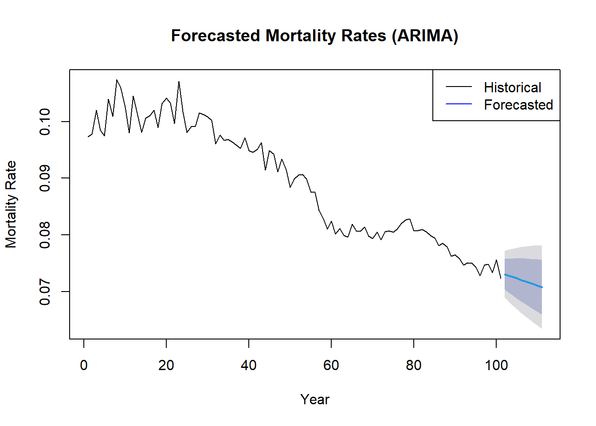
How we interpret these results:
The blue line shows the historical mortality rates over the years and how it changed, while the red line and shaded area is the forecasted data. The red line is the forecasted mortality rates for the next 10 years and the shaded area around the red line is the confidence interval.
Bühlmann and Bühlmann-Straub Models for Credibility Theory
We will use the Bühlmann and Bühlmann-Straub models for credibility adjustments.
Incorporating Adjusted Mortality Rates into Life Insurance Calculations
Shiny App for Life Insurance Calculator with Adjusted Mortality Rates
library(shiny)
ui <- fluidPage(
titlePanel("Life Insurance Calculator with Adjusted Mortality Rates"),
sidebarLayout(
sidebarPanel(
numericInput("age", "Age:", 20, min = 0, max = 110),
numericInput("interest", "Interest Rate:", 0.02, min = 0, max = 0.2, step = 0.001),
numericInput("credibility", "Credibility Factor:", 0.8, min = 0, max = 1, step = 0.1),
selectInput("type", "Insurance Type:",
choices = c("Whole Life" = "whole",
"Temporary" = "temp",
"Deferred" = "deferred")),
conditionalPanel(
condition = "input.type == 'temp' || input.type == 'deferred'",
numericInput("term", "Term/Deferment (years):", 10, min = 1, max = 50)
)
),
mainPanel(
h3("Expected Present Value:"),
textOutput("epv")
)
)
)
server <- function(input, output) {
output$epv <- renderText({
observed_qx <- life_table_2021$qx
expected_qx <- life_table$qx
adjusted_qx <- simple_credibility(observed_qx, expected_qx, input$credibility)
epv <- switch(input$type,
"whole" = whole_life_insurance_adjusted(input$age, input$interest, adjusted_qx),
"temp" = temporary_life_insurance(input$age, input$term, input$interest, life_table),
"deferred" = deferred_life_insurance(input$age, input$term, input$interest, life_table))
paste0("$", round(epv, 2))
})
}
shinyApp(ui = ui, server = server)